Cours théoriques de voile
Un cours complet et gratuit, du vocabulaire du bateau jusqu'aux notions de base du permis côtier, en 17 chapitres. Chaque chapitre ne suppose que les précédents : lisez-les dans l'ordre. Chaque règle est citée par son numéro et son intitulé exacts, avec ce qu'elle oblige ; chaque chapitre se termine par un exercice corrigé, et le cours par quatre questions de révision. Aucune inscription n'est demandée.
Choisir un cours
Commencer la voile
De zéro à la première sortie.
Permis et diplôme
Ce qui est interrogé à l'examen.
Perfectionnement
Une fois qu'on sait déjà naviguer.
Régate
Se mesurer, en respectant les règles.
Les schémas des bateaux
Dix planches annotées, déjà dessinées pour le cours. Touchez-en une : elle s'ouvre, une seule à la fois.
Les alluresSix allures, et la zone morte

SurpriseHabitable · 7,65 m

X-35Habitable · 10,6 m

Hobie 16Multicoque · 5,05 m
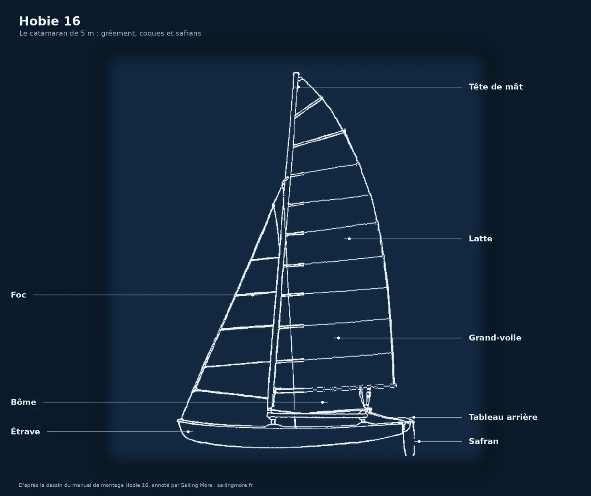
LaserDériveur · 4,2 m

49erSkiff · 4,99 m

iQFOiLPlanche · 2,2 m

Formula KiteKite
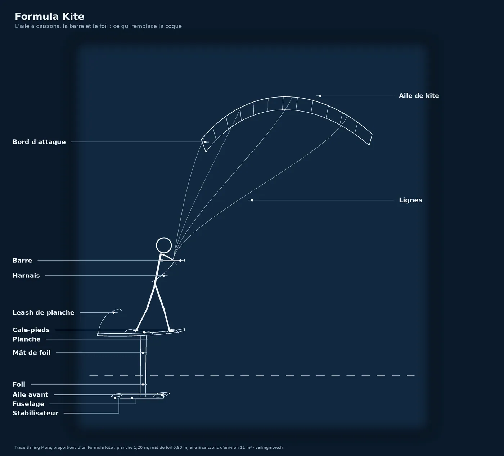
WingfoilWing

La portance d'un foilCoupe d'une aile : incidence et pressions

1Le bateau et son vocabulaire
Un voilier se décrit par ses parties. La coque est le corps du bateau ; l'étrave en est l'avant, l'étambot l'arrière. Le pont la recouvre, et le cockpit est l'espace où l'on s'installe pour barrer.
Quand on regarde vers l'avant, bâbord est à gauche (feu rouge, la nuit) et tribord à droite (feu vert).
Le mât porte les voiles : la grand-voile, fixée au mât et à la bôme, et, à l'avant, le foc ou le génois. On les monte avec les drisses et on les règle avec les écoutes. À bord, une corde s'appelle un bout.
Sous l'eau, la quille limite la dérive et son lest redresse le bateau ; le safran, commandé par la barre, le dirige.
Exercice
Vous êtes à la barre et regardez vers l'étrave. De quel côté est tribord, et quelle couleur de feu y est placée la nuit ?
Correction
À droite ; le feu de tribord est vert (bâbord, à gauche, porte le feu rouge).
2Le vent et les allures
Le vent se nomme d'après le point d'où il vient : un vent du nord souffle vers le sud. Le côté d'où il vient se dit au vent ; le côté opposé, sous le vent.
Un voilier ne peut pas avancer face au vent : de part et d'autre de cette direction, sur environ 45 degrés, s'étend la zone de non-vent. Il avance dans toutes les autres directions, appelées allures.
De la plus proche du vent à la plus éloignée : le près (environ 45° du vent), le bon plein, le travers (90°), le largue (environ 120° à 135°) et le vent arrière (180°).
L'amure dit de quel côté le vent arrive : tribord amures s'il arrive par la droite du bateau, bâbord amures par la gauche.
À bord, on sent le vent apparent, somme du vent réel et du vent créé par l'avancée du bateau ; il semble venir plus de l'avant que le vent réel.
Exercice
Le vent arrive de la droite, perpendiculairement à l'axe du bateau. Quelle allure, quelle amure ?
Correction
Le travers, tribord amures (le vent arrive par tribord).
3Régler les voiles et manœuvrer
On règle les voiles selon l'allure : on borde (on tire l'écoute) pour aller vers le vent, on choque (on relâche) pour s'en éloigner. Une voile qui fasaye, c'est-à-dire qui bat, est trop choquée.
Pour changer de direction : lofer, c'est se rapprocher du vent ; abattre, c'est s'en éloigner.
Virer de bord, c'est faire passer l'avant du bateau face au vent ; on prévient l'équipage par « pare à virer ». Empanner, c'est faire passer l'arrière dans l'axe du vent : la bôme traverse le bateau d'un bord à l'autre, ce qui est dangereux ; on annonce « pare à empanner » et on respecte la consigne attention à la bôme.
Quand le vent forcit, le bateau gîte davantage : on choque les écoutes, on lofe doucement, ou l'on prend un ris, c'est-à-dire que l'on réduit la surface de la grand-voile.
Exercice
Le vent forcit et le bateau gîte trop. Citez deux gestes pour le soulager.
Correction
Choquer les écoutes (surtout la grand-voile) et prendre un ris ; on peut aussi lofer un peu pour que les voiles portent moins.
4Cap, distance et carte
Le cap est la direction du bateau, en degrés de 0 à 360 à partir du nord : 090° est plein est, 180° plein sud, 270° plein ouest.
Le nœud est l'unité de vitesse : un mille nautique par heure. Un mille vaut 1 852 mètres, soit une minute de latitude, que l'on lit sur l'échelle verticale de la carte. Distance = vitesse × temps.
Le compas donne le cap compas. Corrigé de la déviation (propre au bateau), il donne le cap magnétique ; corrigé de la déclinaison (écart entre nord magnétique et nord vrai, indiquée sur la carte), il donne le cap vrai, celui que l'on trace sur la carte. Une déclinaison ouest se compte en négatif : cap vrai = cap magnétique + déclinaison.
Le vent et le courant écartent le bateau de sa trajectoire : c'est la dérive. La route fond est la route réellement suivie sur le fond, différente du cap.
Exercice
Vous naviguez à 6 nœuds. En combien de temps parcourez-vous 15 milles ?
Correction
15 ÷ 6 = 2,5 heures, soit 2 h 30.
5Marées et courants
La marée est la montée et la descente de la mer, deux fois par jour environ. La mer monte pendant le flot jusqu'à la pleine mer, puis descend pendant le jusant jusqu'à la basse mer. Il s'écoule environ six heures entre une pleine mer et une basse mer.
Le marnage est la différence de hauteur entre pleine mer et basse mer. À l'étale, au moment de la renverse, il n'y a presque pas de courant de marée.
La règle des douzièmes estime la hauteur en cours de marée : sur le marnage, l'eau monte de 1/12 la première heure, 2/12 la deuxième, 3/12 la troisième, 3/12 la quatrième, 2/12 la cinquième, 1/12 la sixième.
Le courant de marée porte le bateau : favorable, il aide ; contraire, il freine. Quand le courant est contre le vent, la mer devient plus courte et plus creuse.
Exercice
Le marnage est de 6 m. De combien l'eau est-elle montée après deux heures de flot ?
Correction
1/12 + 2/12 = 3/12, soit 1/4 de 6 m : 1,5 m.
6La météo
L'échelle de Beaufort classe le vent de 0 à 12 : force 4 = 11 à 16 nœuds, force 6 = 22 à 27 nœuds, force 8 = 34 à 40 nœuds (coup de vent). Au-delà de force 6, la navigation demande de l'expérience.
Un anticyclone est une zone de hautes pressions (au-dessus d'environ 1 013 hPa) : temps stable, vent faible. Une dépression est une zone de basses pressions : nuages, pluie, vent plus fort. Dans l'hémisphère nord, le vent tourne autour d'un anticyclone dans le sens des aiguilles d'une montre, autour d'une dépression dans le sens inverse.
Avant de partir, on lit le bulletin météo : vent moyen, rafales, état de la mer. Un grain est un coup de vent bref accompagné de pluie ; l'orage impose de rentrer.
Près des côtes, en été, la brise de mer souffle l'après-midi vers la terre ; la brise de terre souffle la nuit vers le large. La houle est une vague longue venue de loin ; le clapot, une mer courte et désordonnée.
Exercice
Le bulletin annonce « vent de force 6, rafales à 8 ». Convertissez la force 6 en nœuds et dites ce que signifie la force 8.
Correction
Force 6 : 22 à 27 nœuds. Force 8 : 34 à 40 nœuds, un coup de vent — à éviter pour un équipage débutant.
7Balisage et feux
Le balisage guide et prévient des dangers. En Europe, on suit le système AISM/IALA, région A. Les marques latérales bordent un chenal ; on les décrit dans le sens conventionnel, quand on entre dans un port en venant du large.
Marque de bâbord : rouge, cylindrique (on la laisse à bâbord). Marque de tribord : verte, conique (on la laisse à tribord). En rentrant, on voit donc rouge à gauche et vert à droite ; en sortant, c'est l'inverse.
Une marque cardinale porte le nom du côté où se trouve l'eau saine : une cardinale Nord se passe au nord d'elle. Nord : noire au-dessus, jaune en dessous ; Sud : jaune au-dessus, noire en dessous ; Est : noir-jaune-noir ; Ouest : jaune-noir-jaune.
Une bouée noire à bandes rouges marque un danger isolé (on l'évite largement) ; une bouée à bandes verticales rouges et blanches, des eaux saines ; une marque jaune, une zone spéciale.
De nuit, un voilier faisant route à la voile porte un feu rouge à bâbord, un feu vert à tribord et un feu blanc à l'arrière ; sous moteur, il ajoute un feu blanc de tête de mât.
Règles citées
- COLREG 25 a)Sailing Vessels Underway and Vessels Under Oars — Un navire à voile faisant route montre des feux de côté (rouge à bâbord, vert à tribord) et un feu de poupe blanc.
Exercice
Vous rentrez au port, venant du large, et voyez une bouée rouge cylindrique. De quel côté la laissez-vous ?
Correction
À bâbord (rouge à gauche en entrant).
8Éviter l'abordage en mer (RIPAM / COLREG)
Le RIPAM (en anglais COLREG) est le règlement international de 1972 pour prévenir les abordages en mer. Il s'applique à tous les navires, voiliers compris ; pendant une régate, ce sont les règles de course qui régissent les concurrents entre eux (chapitres 9 à 11).
Trois devoirs précèdent toute règle de priorité : veiller (règle 5), reconnaître le risque d'abordage — si le relèvement d'un navire qui approche ne change pas, le risque existe (règle 7) — et agir tôt et franchement (règle 8).
Retenez deux rôles : le navire qui doit s'écarter manœuvre tôt et nettement ; l'autre conserve cap et vitesse tant que le premier agit.
En résumé, à voile : vent de bords différents, c'est celui qui reçoit le vent par bâbord qui s'écarte ; du même bord, celui qui est au vent s'écarte ; qui rattrape s'écarte ; un bateau à moteur s'écarte d'un voilier.
Règles citées
- COLREG 5Look-out — Tout navire maintient en permanence une veille appropriée, visuelle et auditive, par tous les moyens disponibles.
- COLREG 7Risk of Collision — Un navire utilise tous les moyens disponibles pour déterminer s'il y a risque d'abordage ; en cas de doute, ce risque est réputé exister, notamment si le relèvement d'un navire qui approche ne change pas de façon appréciable.
- COLREG 8Action to Avoid Collision — Une manœuvre pour éviter l'abordage est franche, faite largement à temps et assez ample pour être vue de l'autre navire ; on évite une succession de petits changements.
- COLREG 12 a)Sailing Vessels — Deux voiliers : s'ils reçoivent le vent de bords différents, celui qui le reçoit par bâbord s'écarte de la route de l'autre ; s'ils le reçoivent du même bord, le voilier au vent s'écarte de la route du voilier sous le vent.
- COLREG 13 a)Overtaking — Tout navire qui en rattrape un autre s'écarte de sa route ; est rattrapant celui qui arrive de plus de 22,5° sur l'arrière du travers de l'autre.
- COLREG 14 a)Head-on Situation — Deux navires à propulsion mécanique qui se présentent debout à debout modifient chacun leur route sur tribord et se croisent bâbord contre bâbord.
- COLREG 15 a)Crossing Situation — Deux navires à propulsion mécanique dont les routes se croisent : celui qui voit l'autre sur tribord s'écarte et évite, si possible, de passer devant lui.
- COLREG 16Action by Give-way Vessel — Le navire qui doit s'écarter de la route d'un autre agit le plus tôt possible et franchement pour passer bien à l'écart.
- COLREG 17 a)Action by Stand-on Vessel — Le navire qui n'a pas à s'écarter conserve cap et vitesse ; il peut manœuvrer dès qu'il est évident que l'autre ne s'écarte pas, et il doit le faire si l'abordage ne peut plus être évité par la seule manœuvre de l'autre.
- COLREG 18 a)Responsibilities Between Vessels — Un navire à propulsion mécanique faisant route s'écarte de la route d'un navire à voile (ainsi que d'un navire qui ne gouverne pas, à capacité de manœuvre restreinte ou qui pêche).
Exercice
Deux voiliers se croisent en mer, hors régate. Le premier reçoit le vent par tribord, le second par bâbord. Lequel s'écarte, et selon quelle règle ?
Correction
Celui qui reçoit le vent par bâbord s'écarte (COLREG 12 a) i)).
9Régate : le départ et le parcours
Une régate est organisée par le comité de course, qui installe depuis son bateau la ligne de départ : l'espace entre le bateau comité et une marque de départ (une bouée). Avant le signal de départ, on reste du côté « avant-départ » de la ligne.
Si un bateau est du côté parcours de la ligne au signal, c'est un faux départ : il doit revenir et repartir. Si le comité ne peut pas identifier les fautifs, il annule le départ par un rappel général.
Le parcours, décrit dans les instructions de course, enchaîne en général : départ, remontée jusqu'à la bouée au vent, descente vers la bouée sous le vent ou une porte, parfois plusieurs tours, puis arrivée sur la ligne d'arrivée.
Règles citées
- RRS 26Départ des courses — Le départ suit une séquence de signaux : avertissement cinq minutes avant le signal de départ, préparatoire quatre minutes avant, retrait du pavillon préparatoire une minute avant, départ à zéro ; ce sont les signaux visuels qui font foi, pas le son.
- RRS 29Rappels — Si un bateau est du côté parcours de la ligne au signal, le comité hisse le pavillon X (rappel individuel) ; s'il ne peut pas identifier les bateaux ou si la procédure est fautive, il hisse le
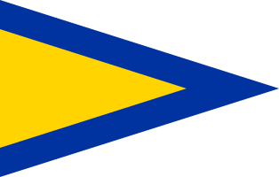
Premier Substitut (rappel général). - RRS 30Pénalités au départ — Quand le pavillon
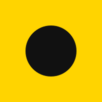
I est envoyé, un bateau qui, pendant la dernière minute avant son signal de départ, a une partie de sa coque, de son équipage ou de son équipement du côté parcours de la ligne, doit repasser côté avant-départ par un prolongement de la ligne avant de partir. - RRS 28Suivre le parcours — Un bateau part, suit le parcours décrit dans les instructions de course, puis finit.
- RRS 31Toucher une marque — Pendant la course, un bateau ne touche pas une marque de départ avant son départ, une marque qui commence, délimite ou termine le bord sur lequel il navigue, ni une marque d'arrivée après avoir fini.
Exercice
À votre départ, le comité hisse le pavillon X avec un son. Que signifie-t-il pour vous, et que faites-vous ?
Correction
C'est un rappel individuel (RRS 29) : au signal, une partie de votre bateau était du côté parcours. Vous revenez entièrement du côté avant-départ, puis vous franchissez la ligne ; tant que vous ne l'avez pas fait, vous n'avez pas pris le départ.
10Régate : les priorités
En régate, la partie 2 des règles de course dit qui doit s'écarter de qui. Deux notions suffisent pour la lire : l'amure (chapitre 2) et l'engagement. Un bateau est « derrière » l'autre quand sa coque est entièrement en arrière d'une ligne perpendiculaire à l'axe de l'autre, passant par le point le plus arrière de celui-ci ; sinon, les bateaux sont engagés.
On lit les règles dans l'ordre : amures opposées (10) ; même amure, engagés (11) ou non engagés (12). Le virement de bord (13) passe en premier. Les règles 14 à 17 limitent les droits que donnent les règles 10 à 13.
Un bateau qui a la priorité peut garder sa route, mais ne doit pas la changer sans laisser à l'autre la place de s'écarter. Si l'on pense qu'une règle a été enfreinte, on peut la signaler : c'est la protestation.
Règles citées
- RRS 10Sur des amures opposées — Quand deux bateaux sont sur des amures opposées, le bateau bâbord amures s'écarte du bateau tribord amures.
- RRS 11Sur la même amure, engagés — Quand deux bateaux sont sur la même amure et engagés, le bateau au vent s'écarte du bateau sous le vent.
- RRS 12Sur la même amure, non engagés — Quand deux bateaux sont sur la même amure et non engagés, le bateau qui est derrière s'écarte du bateau qui est devant.
- RRS 13En virant de bord — Après être passé face au vent, un bateau s'écarte des autres jusqu'à ce qu'il soit au plus près ; pendant ce temps, les règles 10, 11 et 12 ne s'appliquent pas à lui.
- RRS 14Éviter le contact — Un bateau évite le contact avec un autre si c'est raisonnablement possible ; même prioritaire, il doit agir dès qu'il est clair que l'autre ne s'écarte pas.
- RRS 15Acquérir la priorité — Quand un bateau acquiert la priorité, il laisse d'abord à l'autre la place de s'écarter, sauf si c'est l'action de l'autre qui la lui donne.
- RRS 16Changer de route — Quand un bateau prioritaire change de route, il laisse à l'autre la place de s'écarter.
- RRS 17Sur la même amure ; route normale — Si un bateau qui était derrière devient engagé à moins de deux longueurs de coque sous le vent d'un bateau sur la même amure, il ne doit pas naviguer plus haut que sa route normale, sauf s'il passe promptement derrière l'autre.
Exercice
A est tribord amures, B bâbord amures ; leurs routes convergent. B voit qu'A ne change pas de route. Qui s'écarte, selon quelle règle ? Que doit faire A s'il voit que B ne s'écarte pas ?
Correction
B s'écarte (RRS 10). A, bien que prioritaire, doit éviter le contact dès qu'il est clair que B ne s'écarte pas (RRS 14).
11Régate : marques, obstacles et pénalités
Aux marques, le jeu se resserre. La zone est le cercle de trois longueurs de coque autour de la marque. Quand deux bateaux doivent laisser la marque du même côté et que l'un est dans la zone, la règle 18 s'applique.
La place à la marque, c'est la place de naviguer jusqu'à la marque, puis de la contourner du côté requis. Les obstacles (rocher, bateau au mouillage…) ont leurs règles propres (19 et 20).
Un bateau qui pense avoir enfreint une règle peut s'exonérer sur l'eau, sans attendre : il effectue une pénalité d'un tour. Sinon, l'autre bateau peut protester et un jury tranche après la course.
Quelle que soit la règle, l'esprit sportif prime : on ne gagne pas en trichant.
Règles citées
- RRS 18.2Place à la marque — Quand des bateaux doivent laisser une marque du même côté et que l'un d'eux est dans la zone (trois longueurs de coque), le bateau extérieur, s'ils sont engagés, donne la place à la marque au bateau intérieur.
- RRS 19Place pour passer un obstacle — Quand des bateaux engagés passent un obstacle, le bateau extérieur donne au bateau intérieur la place de passer entre lui et l'obstacle.
- RRS 20Place pour virer à un obstacle — Un bateau qui approche d'un obstacle peut héler pour avoir la place de virer ; le bateau hélé répond en virant aussitôt ou en disant « Vire », puis il laisse cette place.
- RRS 44.1Pénalités au moment de l'incident — Un bateau qui a peut-être enfreint une règle de la partie 2 ou la règle 31 peut s'exonérer en effectuant promptement une pénalité d'un tour (un virement et un empannage) après s'être écarté des autres ; en cas de dommage grave ou d'avantage significatif, la pénalité est l'abandon.
- RRS 2Esprit sportif et fair-play — Les bateaux et leurs propriétaires s'affrontent selon les principes reconnus de sportivité et de franc-jeu ; un bateau n'est pénalisé sur ce fondement que s'il est clairement établi qu'il les a enfreints.
Exercice
Deux bateaux engagés arrivent à une marque à laisser à bâbord ; A est à l'intérieur, B à l'extérieur, et l'un d'eux est dans la zone. Qui doit donner la place à la marque ?
Correction
B, le bateau extérieur, donne à A, intérieur, la place à la marque (RRS 18).
12Sécurité en mer
Avant de partir : lire le bulletin météo, vérifier le matériel, donner l'heure de retour prévue à un proche. À bord, chaque personne a un gilet de sauvetage adapté, que l'on porte dès que les conditions l'imposent.
Trois niveaux d'appel à la VHF, sur le canal 16 (veille de détresse) : MAYDAY (dit trois fois) pour un danger grave et imminent ; PAN PAN pour une urgence sans danger immédiat ; SÉCURITÉ pour un avertissement de navigation ou de météo.
En France, les secours en mer sont coordonnés par les CROSS, joignables sur le canal 16 ou, depuis un téléphone portable, au 196.
Homme à la mer : crier « homme à la mer », lui lancer une bouée, désigner une personne qui ne le quitte jamais des yeux, puis lancer l'alerte. Il existe plusieurs méthodes de récupération : apprenez-en une en pratique, avec un moniteur.
Règles citées
- RRS 1.1Sécurité — Un bateau ou un concurrent apporte toute l'aide possible à toute personne ou tout navire en danger.
Exercice
Quand utilise-t-on MAYDAY, et quand PAN PAN ?
Correction
MAYDAY : danger grave et imminent pour une personne ou le bateau. PAN PAN : urgence sans danger immédiat, par exemple une avarie dont on maîtrise la situation.
13Les pavillons et l'alphabet marin
Chaque lettre a un pavillon et un nom : Alfa, Bravo, Charlie… C'est l'alphabet phonétique de l'OTAN, celui qu'on prononce à la VHF pour épeler un nom de bateau, un mot de passe ou un code de course.
Les mêmes pavillons forment le Code international de signaux : un pavillon seul a un sens — le pavillon 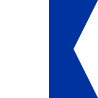
Les 42 pavillons sont ci-dessous, chacun avec sa page : sa forme, ses couleurs, son sens dans le code, ce qu'il vaut en course. Une image s'affiche à chaque fois qu'un pavillon est nommé dans ce cours.
Lettres
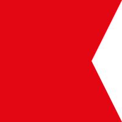
BBravo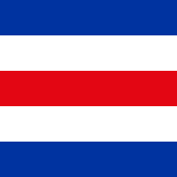
CCharlie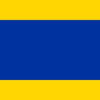
DDeltaEEcho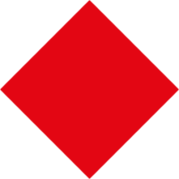
FFoxtrot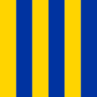
GGolfHHotelIIndiaJJuliett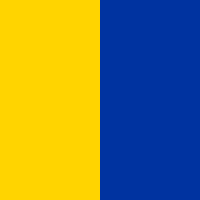
KKilo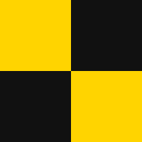
LLima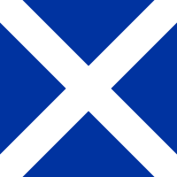
MMike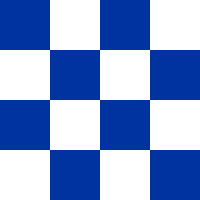
NNovember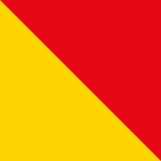
OOscarPPapaQQuebec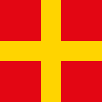
RRomeoSSierraTTango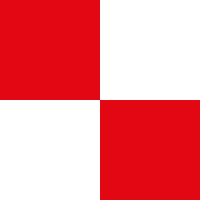
UUniform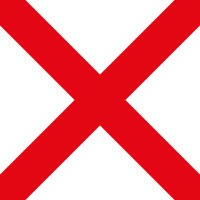
VVictor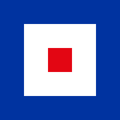
WWhiskeyXX-ray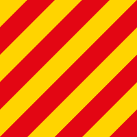
YYankee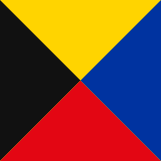
ZZuluChiffres
Pavillons spéciaux
Exercice
Quel pavillon hissez-vous pour signaler qu'un plongeur est sous l'eau, et que dit un pavillon N hissé seul ?
14Les pavillons de course
Sur l'eau, le comité de course parle par pavillons. La séquence de départ est une horloge : l'avertissement, le préparatoire quatre minutes plus tard, le retrait une minute avant le départ, le départ.
Le préparatoire est le pavillon P ; à sa place, I, Z, U ou le noir durcissent la règle du départ. En course, X rappelle un bateau parti trop tôt, le premier substitut rappelle toute la flotte, N annule, S réduit le parcours, C annonce un changement de bord, M remplace une marque manquante. Y impose le gilet, V demande d'écouter la VHF pour un sauvetage, le rouge signale une réclamation.
Chaque signal renvoie à la règle qui le décrit : c'est elle qui fait foi, pas le dessin.
- Pavillon Papa — Pavillon préparatoire, hissé quatre minutes avant le départ. RRS 26
- Pavillon India — Règle du tour de bout : un bateau du côté parcours dans la dernière minute doit revenir par une extension de la ligne avant de partir. RRS 30
- Pavillon Zulu — Pénalité de 20 % pour un bateau dans le triangle pendant la dernière minute. RRS 30
- Pavillon Uniform — Un bateau dans le triangle pendant la dernière minute est disqualifié, mais la course peut être relancée. RRS 30
- Pavillon Noir — Disqualification sans instruction et interdiction de repartir. RRS 30
- Pavillon X-ray — Rappel individuel : un ou plusieurs bateaux étaient du côté parcours au signal ; ils repassent la ligne. RRS 29
- Pavillon Premier substitut — Rappel général : toute la flotte repart. RRS 29
- Pavillon Fanion de réponse — Report : le départ est différé, la séquence reprend une minute après l'affalé. RRS 27
- Pavillon November — Annulation : les courses sont annulées, les bateaux rentrent au port d'attente. RRS 32
- Pavillon Sierra — Parcours réduit : la course est raccourcie, l'arrivée est à la marque signalée. RRS 32
- Pavillon Charlie — Changement du bord suivant du parcours. RRS 33
- Pavillon Mike — Marque manquante : l'objet qui porte le pavillon est à considérer comme la marque. RRS 34
- Pavillon Yankee — Équipements de flottabilité : chaque coureur porte un gilet. RRS 40
- Pavillon Victor — Instructions de recherche et de sauvetage : écouter le canal du comité. RRS 37
- Pavillon Lima — Venez à portée de voix ou suivez ce bateau. RRS 37
- Pavillon Rouge — Réclamation : le bateau qui réclame le hisse au plus tôt et le garde jusque sur terre. RRS 61
Exercice
Le comité hisse le pavillon X avec un coup de corne juste après le signal de départ. Que faites-vous ?
Correction
Rappel individuel : je repasse du côté avant-départ en passant par un prolongement de la ligne, puis je repars. Si je ne le fais pas, je suis classé OCS.
15La VHF : usage et canaux
La VHF porte à vue : quelques milles, une vingtaine avec une bonne antenne en haut du mât. Le canal 16 est le canal de veille, de détresse et d'appel. On y reste à l'écoute, et on passe sur un canal de travail dès que l'appel est établi.
Un appel de détresse commence par « Mayday » trois fois, puis le nom du bateau et sa position. Un danger grave sans danger vital, c'est « Pan pan » ; un avis de sécurité (objet à la mer, essai radio), « Sécurité ». On ne parle jamais sur le canal 70 : il est réservé à l'appel sélectif numérique.
Les canaux ont chacun leur usage, ci-dessous. Sur un bateau, la VHF fixe demande un certificat restreint de radiotéléphoniste ; la veille sur le 16 ne se coupe pas quand on double le canal de travail. On ne bavarde pas : la VHF n'est pas un téléphone, et d'autres peuvent avoir besoin du 16.
| Canal | Usage |
|---|---|
| 16 | Veille, détresse et appel |
| 06 | Course et communications entre bateaux |
| 09 | Ports de plaisance et marinas |
| 10 | Écluses et ponts |
| 13 | Sécurité de la navigation (pont à pont) |
| 72 | Plaisance, course au large |
| 77 | Navires de commerce |
| 70 | Appel sélectif numérique (ASN) — jamais de voix |
| 31 | Clubs et stations de plaisance |
| M, M2 | Méditerranée intérieure (Belgique, Pays-Bas) |
Exercice
Un bateau chavire à cinquante mètres et deux personnes sont à l'eau. Quel message, sur quel canal, et dans quel ordre ?
Correction
« Mayday, Mayday, Mayday », nom du bateau et de celui qui appelle, position, deux personnes à la mer, assistance immédiate requise — sur le canal 16. Puis suivre les instructions de la station de sauvetage.
16S'équiper : gilet, harnais, vêtements
Avant d'apprendre à faire avancer un bateau, on apprend à rester dessus et, si l'on tombe, à rester à la surface. Le gilet passe avant tout autre équipement : on l'enfile au ponton, avant d'embarquer, pas quand le vent monte. Un gilet rangé dans un coffre ne sauve personne.
Choisir le gilet. La norme ISO 12402 classe gilets et aides à la flottabilité par leur flottabilité en newtons : 50 N (aide à la flottabilité, pour nager près d'une rive avec de l'aide à portée), 100 N (eaux abritées, côtier proche), 150 N (large, vêtements lourds) et 275 N (conditions extrêmes). Seuls les gilets de 150 N et plus sont conçus pour retourner sur le dos un porteur inconscient, même en vêtements lourds ; l'aide à la flottabilité de 50 N n'est pas conçue pour cela. Cherchez sur l'étiquette le marquage CE (règlement (UE) 2016/425) et la référence de la norme. Le règlement national fixe en plus ce que le bord doit emporter (en France, la division 240) : il change d'un pays à l'autre, lisez celui du pays où vous naviguez.
Mousse ou gonflable. Le gilet à mousse flotte toujours, sans entretien. Le gonflable est plus confortable mais se contrôle : cartouche de gaz vissée à fond et pesée, pastille ou capsule dans sa date, plis intacts, étanchéité éprouvée avec le tube de gonflage à la bouche, selon la notice du fabricant. Dans les deux cas, la sous-cutale (sangle passée entre les jambes) est indispensable : sans elle, le gilet remonte par-dessus la tête. Un sifflet et un feu à éclats complètent le gilet ; les Offshore Special Regulations de World Sailing (édition en vigueur) les exigent en course hauturière.
Harnais et longe. Le gilet vous retrouve quand vous êtes tombé ; le harnais vous empêche de tomber. La norme ISO 12401 couvre harnais et longes pour voiliers. On s'attache avant d'en avoir besoin : de nuit, seul sur le pont, dans le gros temps, pour aller à l'avant. La longe est courte, et se croche sur un point solide ou sur une ligne de vie tendue le long du pont, jamais sur un chandelier ni sur la filière, qui ne sont pas faits pour retenir un corps. Un équipier tombé mais encore attaché est traîné le long de la coque : la longe doit pouvoir se libérer côté poitrine, même sous charge.
Les vêtements, pour l'eau plus que pour l'air. Trois couches : une couche de base qui évacue l'humidité, une couche chaude (polaire ou laine), une veste et un pantalon imperméables. Pas de coton : mouillé, il refroidit. La RNLI appelle « eau froide » une eau sous 15 °C : le choc de l'immersion coupe le souffle et la force en quelques minutes, avant même l'hypothermie. Aux pieds, des semelles antidérapantes ; aux mains, des gants ; sur la tête, un bonnet ou une casquette tenue par un cordon ; de la crème solaire même par temps gris.
Exercice
Vous partez demain : eau à 14 °C, vent de 15 nœuds. Vous avez un gilet de 50 N, un sweat en coton et des tongs. Que changez-vous, et dans quel ordre ?
Correction
1) Le gilet, parce qu'il traite le risque le plus grave : un 150 N avec sous-cutale dès que l'on s'éloigne du bord (le 50 N n'est pas conçu pour retourner un porteur inconscient). 2) Les vêtements : chaussures à semelles antidérapantes, couches synthétiques ou en laine sous un ciré, pas de coton, car l'eau à 14 °C est « froide » au sens de la RNLI. 3) Une longe si l'on navigue de nuit ou par gros temps (ISO 12401).
17Embarquer et quitter le ponton
Les trois premières minutes à bord décident souvent de la sortie. On embarque le gilet déjà sur le dos et les mains libres, par le milieu du bateau, à hauteur du mât et des haubans, là où il bouge le moins, pas par l'avant ni par l'arrière, qui dansent. Une main pour soi, l'autre pour le bateau : on se tient à un point fixe (hauban, chandelier solide, rouf), jamais à un bout ni à une filière détendue.
Avant de larguer, le briefing : qui barre, qui largue quoi, où sont les gilets, ce que l'on crie et ce que l'on fait si quelqu'un tombe à l'eau, où est la VHF, comment s'arrête le moteur, où est l'extincteur. Deux minutes dites à voix haute remplacent dix minutes de confusion sur l'eau.
Lire le ponton. Le vent et le courant décident de la manœuvre, pas votre envie. Regardez les pavillons, les fumées, le sens dans lequel les bateaux voisins tirent sur leurs amarres. Un bateau n'est pas une voiture : il pivote autour d'un point situé vers son milieu, et son arrière part vers l'extérieur du virage. Imaginez le trajet avant de larguer : par où l'étrave s'écartera, où ira l'arrière, ce qui se trouve à côté.
Larguer dans l'ordre. Moteur en marche et refroidissement contrôlé (un filet d'eau sort à l'échappement), fenders encore en place, câble électrique de quai et passerelle retirés. On largue d'abord ce qui ne retient pas le bateau contre le vent ou le courant, et on garde la dernière amarre jusqu'à l'ordre du barreur ; on la rend à bord en la tenant, sans la lancer. Personne ne retient le bateau avec le pied ou le bras : un bateau de plusieurs tonnes ne s'arrête pas avec un membre.
Sortir du port. Les amarres sont rangées et les fenders rentrés avant le chenal, pas sur le ponton. Les règles de route valent dans le port comme au large : veille permanente (COLREG, règle 5), vitesse de sécurité (règle 6), en chenal étroit on tient sa droite (règle 9). Le règlement particulier du port, affiché à la capitainerie, fixe la vitesse et les usages locaux : le COLREG l'admet (règle 1 b)), et il se lit avant de partir.
Exercice
Quels contrôles faites-vous avant de larguer, et quelles règles du COLREG s'appliquent dès la sortie du port ?
Correction
Gilets mis et briefing fait ; moteur en marche avec l'eau de refroidissement à l'échappement ; câble de quai et passerelle retirés ; fenders en place jusqu'à la sortie de la manœuvre. Puis : veille permanente (règle 5), vitesse de sécurité (règle 6), côté droit du chenal étroit (règle 9), et le règlement particulier du port (règle 1 b)).
Révision du cours
Quatre questions qui reprennent l'ensemble du cours.
1. Vous faites route au 270° (plein ouest) avec un vent du nord. Quelle allure, quelle amure ?
Correction
Le nord est à votre droite : le vent arrive par tribord, perpendiculairement — c'est le travers, tribord amures.
2. Le marnage est de 8 m. De combien l'eau monte-t-elle pendant la troisième heure du flot ?
Correction
3/12 de 8 m = 2 m.
3. Deux voiliers sont sur la même amure ; A est au vent de B. Qui s'écarte, en mer hors course puis en régate ?
Correction
A, dans les deux cas : COLREG 12 a) ii) en mer, RRS 11 en régate (bateaux engagés).
4. Quelle marque latérale laisse-t-on à tribord en entrant au port ? Et que dit-on à la VHF pour un danger grave et imminent ?
Correction
La verte, conique. « MAYDAY », trois fois, sur le canal 16.
Sources : Racing Rules of Sailing 2025-2028 (World Sailing, sailing.org) ; COLREG 1972 (OMI), appliqué en France sous le nom de RIPAM, dont les intitulés sont ceux du texte anglais officiel ; balisage AISM/IALA, région A. Ces résumés ne remplacent pas les textes, qui font foi ; les cas particuliers ne sont pas traités, et le cours ne remplace ni une formation pratique ni l'examen.
Sailing theory course
A complete, free course from the vocabulary of the boat to the basic notions of a coastal licence, in 17 chapters. Each chapter assumes only the previous ones: read them in order. Every rule is cited by its exact number and title, with what it requires; each chapter ends with a corrected exercise, and the course with four review questions. No sign-up is asked.
Choose a course
Start sailing
From zero to your first outing.
Licences and certificates
What the exam asks.
Improve
Once you can already sail.
Racing
Measure yourself, by the rules.
The boat diagrams
Ten annotated plates, already drawn for the course. Touch one: it opens, one at a time.
Points of sailSix points of sail, and the no-go zone
SurpriseCruiser · 7,65 m
X-35Cruiser · 10,6 m
Hobie 16Multihull · 5,05 m
LaserDinghy · 4,2 m
49erSkiff · 4,99 m
iQFOiLWindsurf · 2,2 m
Formula KiteKite
WingfoilWing
How a foil liftsWing section: angle of attack and pressures
Plates are labelled in French.
1The boat and its vocabulary
A sailboat is described by its parts. The hull is the body of the boat; the bow is its front, the stern its back. The deck covers it, and the cockpit is where you sit to steer.
Looking forward, port is on the left (red light at night) and starboard on the right (green light).
The mast carries the sails: the mainsail, attached to the mast and to the boom, and at the front the jib or the genoa. They are hoisted with halyards and trimmed with sheets. On board, a rope is called a line.
Underwater, the keel limits leeway and its ballast rights the boat; the rudder, moved by the tiller or wheel, steers it.
Exercise
You are steering, looking toward the bow. Which side is starboard, and what colour of light is there at night?
Answer
The right; the starboard light is green (port, on the left, carries the red light).
2The wind and the points of sail
The wind is named after where it comes from: a north wind blows toward the south. The side it comes from is the windward side; the opposite side is leeward.
A sailboat cannot sail straight into the wind: on each side of that direction, over about 45 degrees, lies the no-go zone. It sails in all other directions, called points of sail.
From closest to the wind to farthest: close-hauled (about 45° from the wind), the close reach, the beam reach (90°), the broad reach (about 120° to 135°) and the run (180°).
The tack says which side the wind comes from: starboard tack if it comes over the right side of the boat, port tack over the left.
On board you feel the apparent wind, the sum of the true wind and the wind created by the boat's motion; it seems to come more from ahead than the true wind.
Exercise
The wind comes from the right, perpendicular to the boat's axis. Which point of sail, which tack?
Answer
A beam reach, starboard tack (the wind comes over the starboard side).
3Trimming the sails and manoeuvring
Sails are set according to the point of sail: you sheet in (pull the sheet) to go toward the wind, you ease (let it out) to go away from it. A sail that flaps is eased too much.
To change direction: to luff up is to turn toward the wind; to bear away is to turn away from it.
To tack is to bring the bow through the wind; the crew is warned with “ready about”. To gybe is to bring the stern through the wind: the boom swings across the boat, which is dangerous; you call “ready to gybe” and heed mind the boom.
When the wind rises, the boat heels more: you ease the sheets, luff gently, or reef, that is, reduce the area of the mainsail.
Exercise
The wind is rising and the boat heels too much. Name two actions to relieve it.
Answer
Ease the sheets (especially the mainsail) and take a reef; you can also luff up a little so the sails pull less.
4Course, distance and chart
The heading is the direction of the boat, in degrees from 0 to 360 from north: 090° is due east, 180° due south, 270° due west.
The knot is the unit of speed: one nautical mile per hour. A mile is 1,852 metres, one minute of latitude, read on the chart's vertical scale. Distance = speed × time.
The compass gives the compass heading. Corrected for deviation (specific to the boat) it gives the magnetic heading; corrected for variation (the gap between magnetic and true north, given on the chart) it gives the true heading, the one you plot on the chart. West variation counts as negative: true = magnetic + variation.
Wind and current push the boat off its track: that is leeway and drift. The course over the ground is the route actually followed over the seabed, different from the heading.
Exercise
You sail at 6 knots. How long does it take to cover 15 miles?
Answer
15 ÷ 6 = 2.5 hours, i.e. 2 h 30.
5Tides and currents
The tide is the rise and fall of the sea, about twice a day. The sea rises during the flood up to high water, then falls during the ebb to low water. About six hours pass between high and low water.
The tidal range is the height difference between high and low water. At slack water, at the turn, there is almost no tidal current.
The rule of twelfths estimates the height during the tide: of the range, the water rises 1/12 in the first hour, 2/12 in the second, 3/12 in the third, 3/12 in the fourth, 2/12 in the fifth, 1/12 in the sixth.
The tidal current carries the boat: fair, it helps; foul, it slows. When current runs against wind, the sea becomes shorter and steeper.
Exercise
The tidal range is 6 m. How far has the water risen after two hours of flood?
Answer
1/12 + 2/12 = 3/12, i.e. 1/4 of 6 m: 1.5 m.
6Weather
The Beaufort scale ranks wind from 0 to 12: force 4 = 11 to 16 knots, force 6 = 22 to 27 knots, force 8 = 34 to 40 knots (gale). Beyond force 6, sailing takes experience.
An anticyclone is a high-pressure area (above about 1,013 hPa): stable weather, light wind. A depression is a low-pressure area: clouds, rain, stronger wind. In the northern hemisphere, the wind circles clockwise around a high and anticlockwise around a low.
Before leaving, read the weather forecast: mean wind, gusts, sea state. A squall is a brief burst of wind with rain; a thunderstorm means heading in.
Near the coast in summer, the sea breeze blows toward land in the afternoon; the land breeze blows toward the sea at night. Swell is a long wave from far away; chop is a short, disordered sea.
Exercise
The forecast says “wind force 6, gusts 8”. Convert force 6 to knots and say what force 8 means.
Answer
Force 6: 22 to 27 knots. Force 8: 34 to 40 knots, a gale — to be avoided by a beginner crew.
7Buoyage and lights
Buoyage guides and warns of dangers. In Europe we follow the IALA system, region A. Lateral marks line a channel; they are described in the conventional direction, when entering a harbour from seaward.
Port-hand mark: red, cylindrical (left on your port side). Starboard-hand mark: green, conical (left on your starboard side). Entering, you see red to the left and green to the right; leaving, it is the opposite.
A cardinal mark is named after the side where the safe water lies: a North cardinal is passed to the north of it. North: black above, yellow below; South: yellow above, black below; East: black-yellow-black; West: yellow-black-yellow.
A black buoy with red bands marks an isolated danger (stay well clear); a buoy with red and white vertical stripes, safe water; a yellow mark, a special area.
At night, a sailing boat under sail shows a red light to port, a green light to starboard and a white light at the stern; under engine she adds a white masthead light.
Rules cited
- COLREG 25 a)Sailing Vessels Underway and Vessels Under Oars — A sailing vessel underway shows sidelights (red to port, green to starboard) and a white sternlight.
Exercise
You are entering harbour from seaward and see a red cylindrical buoy. Which side do you leave it?
Answer
To port (red to the left when entering).
8Avoiding collisions at sea (COLREG)
COLREG is the 1972 international regulation for preventing collisions at sea (RIPAM in French). It applies to all vessels, sailboats included; during a race, the racing rules govern competitors among themselves (chapters 9 to 11).
Three duties come before any right-of-way rule: keep a look-out (rule 5), recognise risk of collision — if the bearing of an approaching vessel does not change, risk exists (rule 7) — and act early and clearly (rule 8).
Remember two roles: the vessel that must keep out of the way acts early and clearly; the other keeps course and speed as long as the first acts.
In short, under sail: wind on different sides, the one with wind on the port side gives way; same side, the windward boat gives way; the overtaking boat gives way; a power boat gives way to a sailboat.
Rules cited
- COLREG 5Look-out — Every vessel at all times maintains a proper look-out by sight and hearing and by all available means.
- COLREG 7Risk of Collision — A vessel uses all available means to determine whether risk of collision exists; in case of doubt such risk is deemed to exist, notably if the bearing of an approaching vessel does not appreciably change.
- COLREG 8Action to Avoid Collision — Action to avoid collision is positive, made in ample time and large enough to be readily apparent to the other vessel; a succession of small alterations is avoided.
- COLREG 12 a)Sailing Vessels — Two sailing vessels: when each has the wind on a different side, the one with the wind on the port side keeps out of the way of the other; when both have it on the same side, the windward vessel keeps out of the way of the leeward vessel.
- COLREG 13 a)Overtaking — Any vessel overtaking another keeps out of the way of the vessel being overtaken; a vessel is overtaking when coming up from more than 22.5 degrees abaft the other's beam.
- COLREG 14 a)Head-on Situation — Two power-driven vessels meeting head-on each alter course to starboard and pass port side to port side.
- COLREG 15 a)Crossing Situation — Two power-driven vessels crossing: the vessel which has the other on her starboard side keeps out of the way and, if possible, avoids crossing ahead of her.
- COLREG 16Action by Give-way Vessel — The vessel required to keep out of the way acts as early as possible and substantially, to keep well clear.
- COLREG 17 a)Action by Stand-on Vessel — The vessel not required to keep out of the way keeps her course and speed; she may act as soon as it is apparent that the other is not keeping clear, and must do so if collision can no longer be avoided by the other's action alone.
- COLREG 18 a)Responsibilities Between Vessels — A power-driven vessel underway keeps out of the way of a sailing vessel (and of a vessel not under command, restricted in her ability to manoeuvre, or fishing).
Exercise
Two sailboats cross at sea, outside a race. The first has the wind on starboard, the second on port. Which gives way, and under which rule?
Answer
The one with the wind on port gives way (COLREG 12 a) i)).
9Racing: the start and the course
A race is run by the race committee, which sets, from its committee boat, the starting line: the space between the committee boat and a starting mark (a buoy). Before the starting signal, you stay on the pre-start side of the line.
If a boat is on the course side of the line at the signal, it is an early start: she must return and start again. If the committee cannot identify the boats, it abandons the start with a general recall.
The course, described in the sailing instructions, generally goes: start, beat to the windward mark, run to the leeward mark or a gate, sometimes several laps, then finish on the finishing line.
Rules cited
- RRS 26Starting Races — The start follows a sequence of signals: warning five minutes before the starting signal, preparatory four minutes before, preparatory flag removed one minute before, start at zero; times are taken from the visual signals, not the sound.
- RRS 29Recalls — If a boat is on the course side of the line at her starting signal, the committee displays flag X (individual recall); if it cannot identify the boats or the procedure is wrong, it displays First Substitute (general recall).
- RRS 30Starting Penalties — When flag I is displayed, a boat that has any part of her hull, crew or equipment on the course side of the line during the last minute before her starting signal must sail back across an extension of the line to the pre-start side before starting.
- RRS 28Sailing the Course — A boat starts, sails the course described in the sailing instructions, and finishes.
- RRS 31Touching a Mark — While racing, a boat does not touch a starting mark before starting, a mark that begins, bounds or ends the leg she is sailing, or a finishing mark after finishing.
Exercise
At your start, the committee displays flag X with one sound. What does it mean for you, and what do you do?
Answer
It is an individual recall (RRS 29): at the signal, part of your boat was on the course side. You sail back entirely to the pre-start side, then cross the line; until you have, you have not started.
10Racing: right of way
In a race, Part 2 of the racing rules says who keeps clear of whom. Two notions are enough to read it: the tack (chapter 2) and overlap. A boat is “clear astern” of another when her hull is entirely behind a line abeam of the other's aftermost point; otherwise the boats are overlapped.
Read the rules in order: opposite tacks (10); same tack, overlapped (11) or not overlapped (12). A boat that is tacking (13) comes first. Rules 14 to 17 limit the rights that rules 10 to 13 give.
A boat with right of way may hold her course, but must not change it without giving the other room to keep clear. If you think a rule was broken, you can report it: that is a protest.
Rules cited
- RRS 10On Opposite Tacks — When boats are on opposite tacks, a port-tack boat keeps clear of a starboard-tack boat.
- RRS 11On the Same Tack, Overlapped — When boats are on the same tack and overlapped, a windward boat keeps clear of a leeward boat.
- RRS 12On the Same Tack, Not Overlapped — When boats are on the same tack and not overlapped, a boat clear astern keeps clear of a boat clear ahead.
- RRS 13While Tacking — After a boat passes head to wind, she keeps clear of other boats until she is on a close-hauled course; during that time rules 10, 11 and 12 do not apply to her.
- RRS 14Avoiding Contact — A boat avoids contact with another boat if reasonably possible; even with right of way, she must act as soon as it is clear that the other boat is not keeping clear.
- RRS 15Acquiring Right of Way — When a boat acquires right of way, she first gives the other boat room to keep clear, unless she acquires it through the other boat's actions.
- RRS 16Changing Course — When a right-of-way boat changes course, she gives the other boat room to keep clear.
- RRS 17On the Same Tack; Proper Course — If a boat clear astern becomes overlapped within two hull lengths to leeward of a boat on the same tack, she must not sail above her proper course, unless she promptly sails astern of the other boat.
Exercise
A is on starboard tack, B on port tack; their courses converge. B sees A is not altering course. Who keeps clear, under which rule? What must A do if she sees B is not keeping clear?
Answer
B keeps clear (RRS 10). A, though she has right of way, must avoid contact as soon as it is clear B is not keeping clear (RRS 14).
11Racing: marks, obstructions and penalties
At marks, things tighten. The zone is the circle of three hull lengths around the mark. When two boats must leave the mark on the same side and one is in the zone, rule 18 applies.
Mark-room is room to sail to the mark, then to round it on the required side. Obstructions (a rock, an anchored boat…) have their own rules (19 and 20).
A boat that thinks she broke a rule can exonerate herself on the water, without waiting: she takes a one-turn penalty (turn). Otherwise the other boat may protest and a jury decides after the race.
Whatever the rule, sportsmanship comes first: you do not win by cheating.
Rules cited
- RRS 18.2Mark-Room — When boats must leave a mark on the same side and one of them is in the zone (three hull lengths), the outside boat, if they are overlapped, gives the inside boat mark-room.
- RRS 19Room to Pass an Obstruction — When overlapped boats pass an obstruction, the outside boat gives the inside boat room to pass between her and the obstruction.
- RRS 20Room to Tack at an Obstruction — A boat approaching an obstruction may hail for room to tack; the hailed boat either tacks at once or replies “You tack”, and then gives that room.
- RRS 44.1Penalties at the Time of an Incident — A boat that may have broken a rule of Part 2 or rule 31 may exonerate herself by promptly taking a One-Turn Penalty (one tack and one gybe) after clearing other boats; if she caused serious damage or gained a significant advantage, her penalty is to retire.
- RRS 2Fair Sailing — Boats and their owners compete under recognized principles of sportsmanship and fair play; a boat is penalized under this rule only if it is clearly established that she broke them.
Exercise
Two overlapped boats reach a mark to be left to port; A is inside, B outside, and one is in the zone. Who must give mark-room?
Answer
B, the outside boat, gives A, the inside boat, mark-room (RRS 18).
12Safety at sea
Before leaving: read the weather forecast, check the equipment, tell someone your expected return time. On board, everyone has a suitable lifejacket, worn whenever conditions require.
Three levels of VHF call, on channel 16 (distress watch): MAYDAY (said three times) for grave and imminent danger; PAN PAN for urgency without immediate danger; SÉCURITÉ for a navigational or weather warning.
In France, sea rescue is coordinated by the CROSS, reachable on channel 16 or, from a mobile phone, on 196.
Man overboard: shout “man overboard”, throw a lifebuoy, point someone who never loses sight of the person, then raise the alarm. There are several recovery methods: learn one in practice, with an instructor.
Rules cited
- RRS 1.1Safety — A boat or competitor gives all possible help to any person or vessel in danger.
Exercise
When do you use MAYDAY, and when PAN PAN?
Answer
MAYDAY: grave and imminent danger to a person or the boat. PAN PAN: urgency without immediate danger, for example a breakdown you have under control.
13Flags and the marine alphabet
Every letter has a flag and a name: Alfa, Bravo, Charlie… That is the NATO phonetic alphabet, the one you speak on the VHF to spell a boat's name or a race code.
The same flags make up the International Code of Signals: a single flag has a meaning — flag A means 'I have a diver down' — two or three make a group, and numerals give a date, a time, a latitude, a longitude. The answering pennant stands for the decimal point.
All 42 flags are below, each with its own page: shape, colours, meaning in the code, and what it means in racing. A flag shows whenever one is named in this course.
Letters
Special flags
Exercise
Which flag do you hoist to show a diver is down, and what does a single flag N mean?
Answer
Flag A (Alfa, white and blue, swallowtailed). Flag N alone means 'No' (negative).
14Racing flags
On the water the race committee speaks with flags. The starting sequence is a clock: warning, preparatory four minutes later, removal one minute before the start, start.
The preparatory flag is P; I, Z, U or the black flag may replace it and make the start harder. In a race, X recalls one boat, the first substitute recalls the fleet, N abandons, S shortens the course, C announces a change of leg, M replaces a missing mark. Y requires life jackets, V asks you to listen on the VHF for a rescue, the red flag signals a protest.
Every signal links to the rule that describes it: the rule prevails, not the drawing.
- Pavillon Papa — Preparatory signal, four minutes before the start. RRS 26
- Pavillon India — Round-an-end rule. RRS 30
- Pavillon Zulu — 20 % penalty. RRS 30
- Pavillon Uniform — U flag rule. RRS 30
- Pavillon Noir — Black flag rule. RRS 30
- Pavillon X-ray — Individual recall. RRS 29
- Pavillon Premier substitut — General recall. RRS 29
- Pavillon Fanion de réponse — Postponement. RRS 27
- Pavillon November — Abandonment. RRS 32
- Pavillon Sierra — Shortened course. RRS 32
- Pavillon Charlie — Change of the next leg. RRS 33
- Pavillon Mike — Missing mark. RRS 34
- Pavillon Yankee — Life jackets. RRS 40
- Pavillon Victor — Search and rescue instructions. RRS 37
- Pavillon Lima — Come within hail or follow this boat. RRS 37
- Pavillon Rouge — Protest. RRS 61
Exercise
The committee hoists flag X with one sound just after the start. What do you do?
Answer
Individual recall: return to the pre-start side through an extension of the line, then start again. Otherwise you are scored OCS.
15VHF: use and channels
VHF is line of sight: a few miles, twenty or so with a good aerial at the masthead. Channel 16 is the watch, distress and calling channel. Stay listening there, and move to a working channel once the call is established.
A distress call starts with 'Mayday' three times, then the boat's name and position. Serious danger without danger to life is 'Pan pan'; a safety notice is 'Sécurité'. Never speak on channel 70: it is reserved for digital selective calling.
Each channel has its use, below. On board, a fixed VHF requires a restricted radiotelephone certificate; the watch on 16 keeps running while you talk on a working channel. Do not chat: the VHF is not a telephone, and others may need 16.
| Canal | Use |
|---|---|
| 16 | Watch, distress and calling |
| 06 | Racing and ship-to-ship |
| 09 | Marinas and harbours |
| 10 | Locks and bridges |
| 13 | Navigation safety, bridge to bridge |
| 72 | Leisure craft, offshore racing |
| 77 | Commercial shipping |
| 70 | Digital selective calling — no voice |
| 31 | Yacht clubs and marinas |
| M, M2 | Inland waters (Belgium, Netherlands) |
Exercise
A boat capsizes fifty metres away and two people are in the water. What message, on which channel, in what order?
Answer
'Mayday, Mayday, Mayday', name of the boat and of the caller, position, two people in the water, immediate assistance required — on channel 16. Then follow the rescue station's instructions.
16Kit: lifejacket, harness, clothing
Before learning to make a boat go, you learn to stay on it and, if you fall in, to stay afloat. The lifejacket comes before any other kit: you put it on at the pontoon, before stepping aboard, not when the wind rises. A lifejacket stowed in a locker saves nobody.
Choosing the lifejacket. ISO 12402 classes lifejackets and buoyancy aids by their buoyancy in newtons: 50 N (buoyancy aid, for swimming near a shore with help at hand), 100 N (sheltered water, close inshore), 150 N (offshore, heavy clothing) and 275 N (extreme conditions). Only 150 N and 275 N lifejackets are designed to turn an unconscious wearer face up, even in heavy clothing; a 50 N buoyancy aid is not designed to. Look on the label for the CE marking (Regulation (EU) 2016/425) and the standard's reference. National rules also set what a boat must carry (in France, division 240): they differ from one country to the next, so read those of the country where you sail.
Foam or inflatable. A foam lifejacket always floats and needs no upkeep. An inflatable is more comfortable but must be checked: gas cylinder fully screwed in and weighed, bobbin or capsule in date, folds intact, airtightness tested with the oral inflation tube, following the maker's leaflet. Either way, a crotch strap is essential: without it the lifejacket rides up over your head. A whistle and a flashing light complete the lifejacket; World Sailing's Offshore Special Regulations (current edition) require them in offshore racing.
Harness and tether. The lifejacket finds you once you have fallen; the harness stops you falling. ISO 12401 covers harnesses and tethers for sailing yachts. You clip on before you need to: at night, alone on deck, in rough weather, going forward. The tether is short and clips to a strong point or to a jackstay run along the deck, never to a stanchion or the guardrail, which are not made to hold a body. A crew member who has fallen but is still clipped on is dragged along the hull: the tether must be releasable at the chest, even under load.
Clothing, for the water more than the air. Three layers: a base layer that wicks moisture, a warm layer (fleece or wool), a waterproof jacket and trousers. No cotton: wet, it chills. The RNLI calls water below 15 °C “cold”: the shock of immersion takes your breath and strength within minutes, before hypothermia even starts. On your feet, non-slip soles; on your hands, gloves; on your head, a hat or a cap on a lanyard; sun cream even on a grey day.
Exercise
You sail tomorrow: water at 14 °C, wind 15 knots. You own a 50 N buoyancy aid, a cotton sweatshirt and flip-flops. What do you change, and in what order?
Answer
1) The lifejacket, because it deals with the gravest risk: a 150 N with crotch strap as soon as you go away from the shore (a 50 N is not designed to turn an unconscious wearer). 2) The clothing: non-slip shoes, synthetic or wool layers under foul-weather gear, no cotton, since 14 °C water is “cold” in the RNLI's sense. 3) A tether if you sail at night or in rough weather (ISO 12401).
17Boarding and leaving the pontoon
The first three minutes aboard often decide the outing. You step aboard with your lifejacket already on and your hands free, amidships, level with the mast and shrouds where the boat moves least, not at the bow or stern, which dance. One hand for yourself, one for the boat: hold a fixed point (shroud, strong stanchion, coachroof), never a rope or a slack guardrail.
Before casting off, the briefing: who steers, who releases which line, where the lifejackets are, what you shout and do if someone goes overboard, where the VHF is, how the engine stops, where the fire extinguisher is. Two minutes said aloud replace ten minutes of confusion on the water.
Reading the pontoon. Wind and current decide the manoeuvre, not your wishes. Look at flags, smoke, the way neighbouring boats pull on their lines. A boat is not a car: it pivots about a point near its middle, and its stern swings out to the outside of the turn. Picture the path before casting off: which way the bow will move off, where the stern will go, what lies alongside.
Casting off in order. Engine running and cooling checked (a stream of water at the exhaust), fenders still in place, shore power cable and gangway removed. Release first what is not holding the boat against wind or current, and keep the last line until the helm gives the order; hand it back aboard while holding it, do not throw it. Nobody holds the boat off with a foot or an arm: a boat of several tonnes does not stop for a limb.
Leaving the harbour. Lines are stowed and fenders brought in before the channel, not on the pontoon. The rules of the road apply in harbour as at sea: a proper look-out at all times (COLREG, rule 5), a safe speed (rule 6), keep to your right in a narrow channel (rule 9). The harbour's own regulations, posted at the harbour office, set speed and local practice: the COLREG allows them (rule 1 b)), and they are read before leaving.
Exercise
What do you check before casting off, and which COLREG rules apply as soon as you leave the harbour?
Answer
Lifejackets on and briefing done; engine running with cooling water at the exhaust; shore cable and gangway removed; fenders in place until the manoeuvre is clear. Then: a proper look-out (rule 5), safe speed (rule 6), starboard side of a narrow channel (rule 9), and the harbour's own regulations (rule 1 b)).
Course review
Four questions covering the whole course.
1. You head 270° (due west) with a north wind. Which point of sail, which tack?
Answer
North is on your right: the wind comes over the starboard side, at right angles — a beam reach, starboard tack.
2. The tidal range is 8 m. How much does the water rise during the third hour of the flood?
Answer
3/12 of 8 m = 2 m.
3. Two sailboats are on the same tack; A is to windward of B. Who gives way, at sea outside a race and then in a race?
Answer
A, in both cases: COLREG 12 a) ii) at sea, RRS 11 in a race (overlapped boats).
4. Which lateral mark do you leave to starboard when entering harbour? And what do you say on VHF for grave and imminent danger?
Answer
The green, conical one. “MAYDAY”, three times, on channel 16.
Sources: Racing Rules of Sailing 2025-2028 (World Sailing, sailing.org); COLREG 1972 (IMO), titles as in the official English text; IALA buoyage, region A. These summaries do not replace the texts, which prevail; special cases are not covered, and the course replaces neither practical training nor the exam.
Segel-Theoriekurs
Ein vollständiger, kostenloser Kurs, vom Vokabular des Bootes bis zu den Grundkenntnissen eines Küstenpatents, in 17 Kapiteln. Jedes Kapitel setzt nur die vorherigen voraus: lies sie der Reihe nach. Jede Regel wird mit ihrer genauen Nummer und Überschrift zitiert, mit dem, was sie verlangt; jedes Kapitel endet mit einer korrigierten Übung, der Kurs mit vier Wiederholungsfragen. Keine Anmeldung nötig.
Kurs wählen
Segeln lernen
Von null zum ersten Törn.
Scheine und Zeugnisse
Was in der Prüfung gefragt wird.
Für Fortgeschrittene
Wenn man schon segeln kann.
Regatta
Sich messen, nach den Regeln.
Die Bootsschemata
Zehn beschriftete Tafeln, bereits für den Kurs gezeichnet. Tippen Sie eine an: sie öffnet sich, immer nur eine.
Kurse zum WindSechs Kurse, und der Totwinkel
SurpriseFahrtenyacht · 7,65 m
X-35Fahrtenyacht · 10,6 m
Hobie 16Mehrrumpf · 5,05 m
LaserJolle · 4,2 m
49erSkiff · 4,99 m
iQFOiLWindsurf · 2,2 m
Formula KiteKite
WingfoilWing
Der Auftrieb eines FoilsFlügelprofil: Anstellwinkel und Drücke
Die Tafeln sind auf Französisch beschriftet.
1Das Boot und sein Vokabular
Eine Segelyacht wird durch ihre Teile beschrieben. Der Rumpf ist der Körper des Bootes; der Bug ist sein vorderes, das Heck sein hinteres Ende. Das Deck bedeckt ihn, und die Plicht ist der Platz zum Steuern.
Blickt man nach vorn, ist Backbord links (rotes Licht, nachts) und Steuerbord rechts (grünes Licht).
Der Mast trägt die Segel: das Großsegel, am Mast und am Baum befestigt, und vorn die Fock oder die Genua. Man setzt sie mit den Fallen und stellt sie mit den Schoten ein. An Bord heißt ein Tau Leine.
Unter Wasser begrenzt der Kiel die Abdrift und sein Ballast richtet das Boot auf; das Ruder, bedient von der Pinne oder dem Rad, lenkt es.
Übung
Du steuerst und blickst zum Bug. Auf welcher Seite ist Steuerbord, und welche Lichtfarbe führt sie nachts?
Lösung
Rechts; das Steuerbordlicht ist grün (Backbord, links, führt das rote Licht).
2Wind und Kurse zum Wind
Der Wind wird nach der Richtung benannt, aus der er kommt: Nordwind weht nach Süden. Die Seite, von der er kommt, heißt Luv; die gegenüberliegende Lee.
Eine Segelyacht kann nicht gegen den Wind fahren: beidseits dieser Richtung, auf etwa 45 Grad, liegt die Segelverbotszone. Sie fährt in allen anderen Richtungen, den Kursen zum Wind.
Vom windnächsten zum windfernsten: hoch am Wind (etwa 45° zum Wind), angeluvter Halbwind, Halbwind (90°), raumer Wind (etwa 120° bis 135°) und Vorwind (180°).
Der Bug sagt, von welcher Seite der Wind kommt: Steuerbordbug, wenn er von rechts kommt, Backbordbug, wenn von links.
An Bord spürt man den scheinbaren Wind, die Summe aus dem wahren Wind und dem durch die Fahrt erzeugten Wind; er scheint mehr von vorn zu kommen als der wahre.
Übung
Der Wind kommt von rechts, senkrecht zur Bootsachse. Welcher Kurs, welcher Bug?
Lösung
Halbwind, Steuerbordbug (der Wind kommt von Steuerbord).
3Segel trimmen und manövrieren
Die Segel werden nach dem Kurs eingestellt: man holt dicht (zieht die Schot an), um zum Wind zu gehen, man fiert (gibt Schot), um sich zu entfernen. Ein Segel, das killt, ist zu weit gefiert.
Zum Richtungswechsel: Anluven heißt zum Wind drehen; Abfallen heißt vom Wind wegdrehen.
Wenden heißt, den Bug durch den Wind zu führen; die Crew wird mit „klar zur Wende“ gewarnt. Halsen heißt, das Heck durch den Wind zu führen: der Baum schlägt über das Boot, was gefährlich ist; man ruft „klar zur Halse“ und beachtet Achtung, Baum.
Frischt der Wind auf, krängt das Boot stärker: man fiert die Schoten, luvt behutsam an oder reffte, das heißt, man verkleinert die Fläche des Großsegels.
Übung
Der Wind frischt auf und das Boot krängt zu stark. Nenne zwei Maßnahmen zur Entlastung.
Lösung
Schoten fieren (vor allem das Groß) und ein Reff einbinden; man kann auch etwas anluven, damit die Segel weniger ziehen.
4Kurs, Distanz und Karte
Der Kurs ist die Richtung des Bootes, in Grad von 0 bis 360 ab Nord: 090° ist Ost, 180° Süd, 270° West.
Der Knoten ist die Geschwindigkeitseinheit: eine Seemeile pro Stunde. Eine Seemeile sind 1 852 Meter, eine Breitenminute, die man am senkrechten Maßstab der Karte abliest. Distanz = Geschwindigkeit × Zeit.
Der Kompass gibt den Kompasskurs. Um die Ablenkung (bootsspezifisch) korrigiert ergibt er den missweisenden Kurs; um die Missweisung (Abweichung zwischen magnetisch Nord und rechtweisend Nord, in der Karte angegeben) korrigiert den rechtweisenden Kurs, den man in die Karte einträgt. Westliche Missweisung zählt negativ: rechtweisend = missweisend + Missweisung.
Wind und Strom versetzen das Boot von seinem Kurs: das ist die Abdrift. Der Kurs über Grund ist der tatsächlich über Grund gefahrene Weg, verschieden vom Kurs.
Übung
Du fährst 6 Knoten. Wie lange brauchst du für 15 Seemeilen?
Lösung
15 ÷ 6 = 2,5 Stunden, also 2 h 30.
5Gezeiten und Strömungen
Die Tide ist das Steigen und Fallen des Meeres, etwa zweimal am Tag. Das Wasser steigt während der Flut bis zum Hochwasser, dann fällt es während der Ebbe bis zum Niedrigwasser. Zwischen Hoch- und Niedrigwasser vergehen etwa sechs Stunden.
Der Tidenhub ist der Höhenunterschied zwischen Hoch- und Niedrigwasser. Zur Stauwasserzeit, beim Kentern, gibt es fast keinen Gezeitenstrom.
Die Zwölftelregel schätzt die Höhe im Tidenverlauf: vom Tidenhub steigt das Wasser in der ersten Stunde 1/12, in der zweiten 2/12, in der dritten 3/12, in der vierten 3/12, in der fünften 2/12, in der sechsten 1/12.
Der Gezeitenstrom trägt das Boot: mitlaufend hilft er, gegenan bremst er. Läuft der Strom gegen den Wind, wird die See kürzer und steiler.
Übung
Der Tidenhub beträgt 6 m. Wie weit ist das Wasser nach zwei Stunden Flut gestiegen?
Lösung
1/12 + 2/12 = 3/12, also 1/4 von 6 m: 1,5 m.
6Das Wetter
Die Beaufort-Skala stuft den Wind von 0 bis 12 ein: Stärke 4 = 11 bis 16 Knoten, Stärke 6 = 22 bis 27 Knoten, Stärke 8 = 34 bis 40 Knoten (Sturm). Ab Stärke 6 braucht das Segeln Erfahrung.
Ein Hoch ist ein Hochdruckgebiet (über etwa 1 013 hPa): stabiles Wetter, schwacher Wind. Ein Tief ist ein Tiefdruckgebiet: Wolken, Regen, stärkerer Wind. Auf der Nordhalbkugel dreht der Wind im Uhrzeigersinn um ein Hoch und gegen den Uhrzeigersinn um ein Tief.
Vor dem Auslaufen liest man den Wetterbericht: mittlerer Wind, Böen, Seegang. Eine Regenbö ist ein kurzer Windstoß mit Regen; bei einem Gewitter läuft man ein.
In Küstennähe weht im Sommer die Seebrise nachmittags zum Land; die Landbrise nachts aufs Meer. Die Dünung ist eine lange, weither kommende Welle; der Kabbelsee ist eine kurze, ungeordnete See.
Übung
Der Bericht meldet „Wind Stärke 6, Böen 8“. Rechne Stärke 6 in Knoten um und sage, was Stärke 8 bedeutet.
Lösung
Stärke 6: 22 bis 27 Knoten. Stärke 8: 34 bis 40 Knoten, ein Sturm — für eine Anfängercrew zu meiden.
7Betonnung und Lichter
Die Betonnung führt und warnt vor Gefahren. In Europa gilt das IALA-System, Region A. Seitenzeichen säumen eine Fahrrinne; sie werden in der Betonnungsrichtung beschrieben, beim Einlaufen vom Meer in einen Hafen.
Backbordtonne: rot, zylindrisch (an Backbord gelassen). Steuerbordtonne: grün, kegelförmig (an Steuerbord gelassen). Beim Einlaufen sieht man Rot links und Grün rechts; beim Auslaufen umgekehrt.
Ein Kardinalzeichen trägt den Namen der Seite, auf der das sichere Wasser liegt: ein Nord-Kardinalzeichen passiert man nördlich. Nord: schwarz oben, gelb unten; Süd: gelb oben, schwarz unten; Ost: schwarz-gelb-schwarz; West: gelb-schwarz-gelb.
Eine schwarze Tonne mit roten Bändern bezeichnet eine Einzelgefahr (weiträumig meiden); eine Tonne mit senkrechten roten und weißen Streifen sicheres Wasser; ein gelbes Zeichen ein Sondergebiet.
Nachts führt eine Segelyacht unter Segeln ein rotes Licht an Backbord, ein grünes an Steuerbord und ein weißes am Heck; unter Motor kommt ein weißes Topplicht hinzu.
Zitierte Regeln
- COLREG 25 a)Sailing Vessels Underway and Vessels Under Oars — Ein Segelfahrzeug in Fahrt führt Seitenlichter (rot an Backbord, grün an Steuerbord) und ein weißes Hecklicht.
Übung
Du läufst vom Meer in den Hafen ein und siehst eine rote zylindrische Tonne. An welcher Seite lässt du sie?
Lösung
An Backbord (Rot links beim Einlaufen).
8Kollisionen auf See vermeiden (KVR / COLREG)
Die KVR (englisch COLREG) sind die internationalen Regeln von 1972 zur Verhütung von Zusammenstößen auf See. Sie gelten für alle Fahrzeuge, Segelboote eingeschlossen; während einer Wettfahrt regeln die Wettsegelbestimmungen das Verhältnis der Teilnehmer untereinander (Kapitel 9 bis 11).
Drei Pflichten gehen jeder Vorfahrtsregel voraus: Ausguck halten (Regel 5), Kollisionsgefahr erkennen — ändert sich die Peilung eines sich nähernden Fahrzeugs nicht, besteht sie (Regel 7) — und früh und entschlossen handeln (Regel 8).
Merke zwei Rollen: Das ausweichpflichtige Fahrzeug manövriert früh und deutlich; das andere behält Kurs und Geschwindigkeit bei, solange das erste handelt.
Kurz, unter Segeln: Wind von verschiedenen Seiten, weicht das mit Wind von Backbord aus; von derselben Seite, das Luvboot; wer überholt, weicht aus; ein Motorboot weicht einem Segelboot aus.
Zitierte Regeln
- COLREG 5Look-out — Jedes Fahrzeug hält jederzeit durch Sehen und Hören sowie mit allen verfügbaren Mitteln gehörigen Ausguck.
- COLREG 7Risk of Collision — Ein Fahrzeug nutzt alle verfügbaren Mittel, um festzustellen, ob Kollisionsgefahr besteht; im Zweifel gilt sie als gegeben, insbesondere wenn sich die Peilung eines sich nähernden Fahrzeugs nicht merklich ändert.
- COLREG 8Action to Avoid Collision — Ein Manöver zur Kollisionsverhütung ist entschlossen, rechtzeitig und so groß, dass das andere Fahrzeug es erkennt; eine Folge kleiner Änderungen wird vermieden.
- COLREG 12 a)Sailing Vessels — Zwei Segelfahrzeuge: Hat jedes den Wind von einer anderen Seite, muss das mit Wind von Backbord dem anderen ausweichen; haben beide ihn von derselben Seite, muss das Luvfahrzeug dem Leefahrzeug ausweichen.
- COLREG 13 a)Overtaking — Jedes Fahrzeug, das ein anderes überholt, muss dem überholten aus dem Weg gehen; überholend ist, wer sich von mehr als 22,5° achterlicher als querab nähert.
- COLREG 14 a)Head-on Situation — Begegnen sich zwei Maschinenfahrzeuge auf entgegengesetzten Kursen, ändert jedes seinen Kurs nach Steuerbord und sie passieren Backbord an Backbord.
- COLREG 15 a)Crossing Situation — Kreuzen sich die Kurse zweier Maschinenfahrzeuge, muss dasjenige, das das andere an seiner Steuerbordseite hat, ausweichen und möglichst nicht vor dessen Bug kreuzen.
- COLREG 16Action by Give-way Vessel — Das ausweichpflichtige Fahrzeug handelt so früh wie möglich und entschlossen, um weit genug freizubleiben.
- COLREG 17 a)Action by Stand-on Vessel — Das nicht ausweichpflichtige Fahrzeug behält Kurs und Geschwindigkeit bei; es darf manövrieren, sobald klar ist, dass das andere nicht ausweicht, und muss es, wenn die Kollision nicht mehr allein durch das Manöver des anderen vermieden werden kann.
- COLREG 18 a)Responsibilities Between Vessels — Ein Maschinenfahrzeug in Fahrt muss einem Segelfahrzeug aus dem Weg gehen (und einem manövrierunfähigen, manövrierbehinderten oder fischenden Fahrzeug).
Übung
Zwei Segelboote kreuzen sich auf See, außerhalb einer Wettfahrt. Das erste hat den Wind von Steuerbord, das zweite von Backbord. Welches weicht aus, nach welcher Regel?
Lösung
Das mit Wind von Backbord weicht aus (COLREG 12 a) i)).
9Wettfahrt: Start und Kurs
Eine Wettfahrt wird vom Wettfahrtausschuss ausgerichtet, der von seinem Startschiff die Startlinie legt: der Raum zwischen Startschiff und einer Startmarke. Vor dem Startsignal bleibt man auf der Vorstartseite der Linie.
Ist ein Boot beim Signal auf der Kursseite der Linie, ist das ein Fehlstart: es muss zurück und neu starten. Kann der Ausschuss die Boote nicht erkennen, bricht er den Start mit einem Allgemeinen Rückruf ab.
Der Kurs, in den Segelanweisungen beschrieben, verläuft meist: Start, Kreuz zur Luvtonne, Vorwindstrecke zur Leetonne oder einem Tor, manchmal mehrere Runden, dann Ziel an der Ziellinie.
Zitierte Regeln
- RRS 26Partenza delle regate — Der Start folgt einer Signalfolge: Ankündigung fünf Minuten vor dem Startsignal, Vorbereitung vier Minuten vorher, Vorbereitungsflagge eine Minute vorher nieder, Start bei null; maßgeblich sind die optischen Signale, nicht der Ton.
- RRS 29Richiami — Ist ein Boot beim Startsignal auf der Kursseite der Linie, setzt der Wettfahrtausschuss die Flagge X (Einzelrückruf); kann er die Boote nicht erkennen oder ist das Verfahren fehlerhaft, setzt er den Ersatzwimpel (Allgemeiner Rückruf).
- RRS 30Penalità di partenza — Ist die Flagge I gesetzt, muss ein Boot, das in der letzten Minute vor seinem Startsignal mit einem Teil von Rumpf, Besatzung oder Ausrüstung auf der Kursseite der Linie war, vor dem Start über eine Verlängerung der Linie auf die Vorstartseite zurückkehren.
- RRS 28Seguire il percorso — Ein Boot startet, segelt den in den Segelanweisungen beschriebenen Kurs und geht durchs Ziel.
- RRS 31Toccare una boa — Während der Wettfahrt berührt ein Boot keine Startmarke vor dem Start, keine Marke, die die Strecke beginnt, begrenzt oder beendet, und keine Zielmarke nach dem Zieldurchgang.
Übung
Bei deinem Start setzt der Ausschuss die Flagge X mit einem Ton. Was bedeutet das für dich, und was tust du?
Lösung
Es ist ein Einzelrückruf (RRS 29): beim Signal war ein Teil deines Bootes auf der Kursseite. Du kehrst vollständig auf die Vorstartseite zurück und kreuzt dann die Linie; bis dahin bist du nicht gestartet.
10Wettfahrt: die Vorfahrt
In der Wettfahrt sagt Teil 2 der Wettsegelbestimmungen, wer wem ausweichen muss. Zwei Begriffe genügen: der Bug (Kapitel 2) und die Überlappung. Ein Boot ist „achtern frei“ von einem anderen, wenn sein Rumpf ganz hinter einer Querlinie durch den hintersten Punkt des anderen liegt; sonst überlappen die Boote.
Die Regeln liest man der Reihe nach: entgegengesetzte Bugs (10); gleicher Bug, überlappend (11) oder nicht überlappend (12). Das Wenden (13) kommt zuerst. Die Regeln 14 bis 17 begrenzen die Rechte der Regeln 10 bis 13.
Ein Boot mit Wegerecht darf seinen Kurs halten, ihn aber nicht ändern, ohne dem anderen Raum zum Ausweichen zu geben. Glaubt man, eine Regel sei verletzt worden, kann man das melden: das ist der Protest.
Zitierte Regeln
- RRS 10Su mure opposte — Wenn Boote auf entgegengesetzten Bugen segeln, muss ein Boot auf Backbordbug einem Boot auf Steuerbordbug ausweichen.
- RRS 11Sulla stessa mura, in overlap — Wenn Boote auf gleichem Bug und überlappend segeln, muss das Luvboot dem Leeboot ausweichen.
- RRS 12Sulla stessa mura, non in overlap — Wenn Boote auf gleichem Bug und nicht überlappend segeln, muss das achtern befindliche Boot dem voraus befindlichen Boot ausweichen.
- RRS 13Durante la virata — Nach dem Durchgang durch den Wind weicht ein Boot den anderen aus, bis es hoch am Wind segelt; währenddessen gelten für es die Regeln 10, 11 und 12 nicht.
- RRS 14Evitare il contatto — Ein Boot vermeidet Kontakt mit einem anderen, wenn es vernünftigerweise möglich ist; auch mit Wegerecht muss es handeln, sobald klar ist, dass das andere nicht ausweicht.
- RRS 15Acquisire il diritto di rotta — Erwirbt ein Boot Wegerecht, gibt es dem anderen zunächst Raum zum Ausweichen, es sei denn, es erwirbt es durch Handlungen des anderen.
- RRS 16Cambiare rotta — Ändert ein Boot mit Wegerecht seinen Kurs, gibt es dem anderen Raum zum Ausweichen.
- RRS 17Sulla stessa mura; rotta propria — Wird ein achteres Boot innerhalb von zwei Rumpflängen in Lee eines Bootes auf demselben Bug überlappend, darf es nicht über seinen Raumkurs hinaus anluven, es sei denn, es passiert umgehend achtern das andere.
Übung
A ist auf Steuerbordbug, B auf Backbordbug; die Kurse laufen zusammen. B sieht, dass A den Kurs nicht ändert. Wer weicht aus, nach welcher Regel? Was muss A tun, wenn er sieht, dass B nicht ausweicht?
Lösung
B weicht aus (RRS 10). A muss trotz Wegerecht den Kontakt vermeiden, sobald klar ist, dass B nicht ausweicht (RRS 14).
11Wettfahrt: Marken, Hindernisse und Strafen
An den Marken wird es eng. Die Zone ist der Kreis von drei Rumpflängen um die Marke. Müssen zwei Boote die Marke auf derselben Seite lassen und ist eines in der Zone, gilt Regel 18.
Raum an der Tonne ist der Raum, bis zur Marke zu segeln und sie dann auf der vorgeschriebenen Seite zu runden. Hindernisse (ein Fels, ein ankerndes Boot …) haben eigene Regeln (19 und 20).
Ein Boot, das eine Regel verletzt zu haben glaubt, kann sich auf dem Wasser sofort entlasten: es führt eine Strafe von einer Drehung aus. Sonst kann das andere Boot protestieren, und ein Schiedsgericht entscheidet nach der Wettfahrt.
Welche Regel auch gilt, Sportlichkeit geht vor: man gewinnt nicht durch Betrug.
Zitierte Regeln
- RRS 18.2Spazio alla boa — Müssen Boote eine Marke auf derselben Seite lassen und ist eines in der Zone (drei Rumpflängen), gibt das äußere Boot, wenn sie überlappen, dem inneren Raum an der Tonne.
- RRS 19Spazio per passare un ostacolo — Passieren überlappende Boote ein Hindernis, gibt das äußere Boot dem inneren Raum, zwischen ihm und dem Hindernis durchzufahren.
- RRS 20Spazio per virare a un ostacolo — Ein Boot, das sich einem Hindernis nähert, kann um Raum zum Wenden rufen; das gerufene Boot wendet sofort oder antwortet „Wende“ und gibt dann diesen Raum.
- RRS 44.1Penalità al momento dell'incidente — Ein Boot, das eine Regel von Teil 2 oder Regel 31 verletzt haben könnte, kann sich entlasten, indem es nach Freikommen von den anderen umgehend eine Ein-Drehung-Strafe (eine Wende und eine Halse) ausführt; bei schwerem Schaden oder erheblichem Vorteil ist die Strafe die Aufgabe.
- RRS 2Correttezza sportiva — Boote und ihre Eigner segeln nach den anerkannten Grundsätzen der Sportlichkeit und Fairness; ein Boot wird nach dieser Regel nur bestraft, wenn eindeutig feststeht, dass es sie verletzt hat.
Übung
Zwei überlappende Boote erreichen eine Marke, die an Backbord zu lassen ist; A ist innen, B außen, und eines ist in der Zone. Wer muss Raum an der Tonne geben?
Lösung
B, das äußere Boot, gibt A, dem inneren, Raum an der Tonne (RRS 18).
12Sicherheit auf See
Vor dem Auslaufen: den Wetterbericht lesen, die Ausrüstung prüfen, jemandem die geplante Rückkehrzeit nennen. An Bord hat jeder eine passende Rettungsweste, die getragen wird, sobald die Bedingungen es verlangen.
Drei Stufen des UKW-Anrufs, auf Kanal 16 (Notruf-Hörwache): MAYDAY (dreimal gesagt) bei ernster und unmittelbarer Gefahr; PAN PAN bei Dringlichkeit ohne unmittelbare Gefahr; SÉCURITÉ bei einer Navigations- oder Wetterwarnung.
In Frankreich wird die Seenotrettung von den CROSS koordiniert, erreichbar auf Kanal 16 oder vom Mobiltelefon unter 196.
Mann über Bord: „Mann über Bord“ rufen, ihm einen Rettungsring zuwerfen, eine Person bestimmen, die ihn nie aus den Augen verliert, dann Alarm schlagen. Es gibt mehrere Bergemethoden: lerne eine praktisch, mit einem Ausbilder.
Zitierte Regeln
- RRS 1.1Sicurezza — Ein Boot oder Wettfahrtteilnehmer leistet jeder Person oder jedem Fahrzeug in Gefahr jede mögliche Hilfe.
Übung
Wann benutzt man MAYDAY, und wann PAN PAN?
Lösung
MAYDAY: ernste und unmittelbare Gefahr für eine Person oder das Boot. PAN PAN: Dringlichkeit ohne unmittelbare Gefahr, zum Beispiel eine Panne, die man im Griff hat.
13Die Flaggen und das marine Alphabet
Jeder Buchstabe hat eine Flagge und einen Namen: Alfa, Bravo, Charlie… Das ist das NATO-Alphabet, mit dem man über UKW einen Bootsnamen buchstabiert.
Dieselben Flaggen bilden den Internationalen Signalkodex: eine einzelne Flagge hat eine Bedeutung — A heißt «Ich habe einen Taucher im Wasser» —, zwei oder drei bilden eine Gruppe, und Ziffern geben Datum, Uhrzeit, Breite und Länge an.
Alle 42 Flaggen stehen unten, jede mit ihrer Seite: Form, Farben, Bedeutung im Kodex und im Regattasport.
Letters
Special flags
Übung
Welche Flagge setzt man für einen Taucher im Wasser, und was bedeutet eine einzelne Flagge N?
Lösung
Flagge A (Alfa, weiß und blau, geschwalbt). Flagge N allein heißt «Nein».
14Regattaflaggen
Auf dem Wasser spricht die Wettfahrtleitung mit Flaggen. Die Startsequenz ist eine Uhr: Ankündigung, vier Minuten später die Vorbereitungsflagge, eine Minute vor dem Start deren Niederholen, dann der Start.
Die Vorbereitungsflagge ist P; an ihrer Stelle verschärfen I, Z, U oder die schwarze Flagge den Start. Im Rennen ruft X ein Boot zurück, der erste Ersatz die ganze Flotte, N bricht ab, S verkürzt den Kurs, C kündigt einen Schenkelwechsel an, M ersetzt eine fehlende Tonne. Y verlangt Rettungswesten, V heißt UKW für eine Rettung abhören, die rote Flagge zeigt einen Protest an.
Jedes Signal verweist auf die Regel, die es beschreibt: die Regel gilt, nicht das Bild.
- Pavillon Papa — Preparatory signal, four minutes before the start. RRS 26
- Pavillon India — Round-an-end rule. RRS 30
- Pavillon Zulu — 20 % penalty. RRS 30
- Pavillon Uniform — U flag rule. RRS 30
- Pavillon Noir — Black flag rule. RRS 30
- Pavillon X-ray — Individual recall. RRS 29
- Pavillon Premier substitut — General recall. RRS 29
- Pavillon Fanion de réponse — Postponement. RRS 27
- Pavillon November — Abandonment. RRS 32
- Pavillon Sierra — Shortened course. RRS 32
- Pavillon Charlie — Change of the next leg. RRS 33
- Pavillon Mike — Missing mark. RRS 34
- Pavillon Yankee — Life jackets. RRS 40
- Pavillon Victor — Search and rescue instructions. RRS 37
- Pavillon Lima — Come within hail or follow this boat. RRS 37
- Pavillon Rouge — Protest. RRS 61
Übung
Die Leitung setzt direkt nach dem Start Flagge X mit einem Schallsignal. Was tun Sie?
Lösung
Einzelrückruf: über eine Verlängerung der Linie auf die Vorstartseite zurück und neu starten. Sonst werde ich als OCS gewertet.
15UKW: Gebrauch und Kanäle
UKW reicht auf Sicht: wenige Meilen, mit guter Antenne im Masttopp etwa zwanzig. Kanal 16 ist der Wach-, Not- und Anrufkanal; man bleibt dort auf Empfang und wechselt auf einen Arbeitskanal, sobald der Anruf steht.
Ein Notruf beginnt dreimal mit «Mayday», dann Bootsname und Position. Schwere Gefahr ohne Lebensgefahr ist «Pan pan»; eine Sicherheitsmeldung «Sécurité». Auf Kanal 70 wird nie gesprochen: er ist dem digitalen Selektivruf vorbehalten.
Jeder Kanal hat seine Aufgabe, siehe unten. An Bord verlangt die feste UKW ein beschränktes Funkzeugnis; die Wache auf 16 läuft weiter, während man auf einem Arbeitskanal spricht.
| Canal | Use |
|---|---|
| 16 | Watch, distress and calling |
| 06 | Racing and ship-to-ship |
| 09 | Marinas and harbours |
| 10 | Locks and bridges |
| 13 | Navigation safety, bridge to bridge |
| 72 | Leisure craft, offshore racing |
| 77 | Commercial shipping |
| 70 | Digital selective calling — no voice |
| 31 | Yacht clubs and marinas |
| M, M2 | Inland waters (Belgium, Netherlands) |
Übung
Ein Boot kentert fünfzig Meter entfernt, zwei Personen sind im Wasser. Welche Meldung, auf welchem Kanal, in welcher Reihenfolge?
Lösung
«Mayday, Mayday, Mayday», Name des Bootes und des Anrufers, Position, zwei Personen im Wasser, sofortige Hilfe erforderlich — auf Kanal 16. Danach die Anweisungen der Rettungsstelle befolgen.
16Ausrüstung: Weste, Gurt, Kleidung
Bevor man lernt, ein Boot voranzubringen, lernt man, an Bord zu bleiben und, wenn man doch fällt, an der Oberfläche zu bleiben. Die Weste kommt vor jeder anderen Ausrüstung: Man zieht sie am Steg an, vor dem Einsteigen, nicht erst, wenn der Wind zunimmt. Eine Weste in der Backskiste rettet niemanden.
Die Weste wählen. Die Norm ISO 12402 teilt Rettungswesten und Schwimmhilfen nach ihrem Auftrieb in Newton ein: 50 N (Schwimmhilfe, zum Schwimmen nahe am Ufer mit Hilfe in Reichweite), 100 N (geschützte Gewässer, küstennah), 150 N (offshore, schwere Kleidung) und 275 N (extreme Bedingungen). Nur Westen ab 150 N sind dafür gebaut, einen Bewusstlosen auch in schwerer Kleidung auf den Rücken zu drehen; eine Schwimmhilfe mit 50 N ist dafür nicht gebaut. Achten Sie auf dem Etikett auf die CE-Kennzeichnung (Verordnung (EU) 2016/425) und die Normangabe. Nationale Vorschriften legen zusätzlich fest, was ein Boot mitführen muss (in Frankreich die division 240): Sie unterscheiden sich von Land zu Land, lesen Sie die des Landes, in dem Sie segeln.
Schaumstoff oder automatisch. Eine Schaumstoffweste schwimmt immer und braucht keine Wartung. Eine Automatikweste ist bequemer, muss aber geprüft werden: Gaspatrone fest eingeschraubt und gewogen, Auslöser oder Kapsel im Datum, Falten unversehrt, Dichtheit mit dem Mundventil geprüft, nach der Anleitung des Herstellers. In beiden Fällen ist der Schrittgurt unverzichtbar: Ohne ihn rutscht die Weste über den Kopf. Pfeife und Blinklicht ergänzen die Weste; die Offshore Special Regulations von World Sailing (gültige Ausgabe) verlangen sie bei Hochseeregatten.
Gurt und Lifeline. Die Weste findet Sie, wenn Sie gefallen sind; der Gurt verhindert den Sturz. Die Norm ISO 12401 behandelt Sicherheitsgurte und Lifelines für Segelyachten. Man pickt ein, bevor man es braucht: nachts, allein an Deck, bei schwerem Wetter, auf dem Weg nach vorn. Die Leine ist kurz und wird an einem stabilen Punkt oder an einem Strecktau längs des Decks befestigt, nie an einem Relingsstütz oder an der Reling, die nicht dafür gebaut sind, einen Körper zu halten. Ein gestürzter, aber noch eingepickter Mitsegler wird am Rumpf entlanggeschleift: Die Leine muss sich auf Brusthöhe lösen lassen, auch unter Last.
Kleidung, mehr für das Wasser als für die Luft. Drei Schichten: eine Basisschicht, die Feuchtigkeit abtransportiert, eine wärmende Schicht (Fleece oder Wolle), wasserdichte Jacke und Hose. Keine Baumwolle: Nass kühlt sie aus. Die RNLI nennt Wasser unter 15 °C „kalt“: Der Schock des Eintauchens nimmt innerhalb von Minuten Atem und Kraft, noch vor der Unterkühlung. An den Füßen rutschfeste Sohlen; an den Händen Handschuhe; auf dem Kopf Mütze oder Kappe mit Band; Sonnencreme auch bei grauem Himmel.
Übung
Sie segeln morgen: Wasser 14 °C, Wind 15 Knoten. Sie haben eine Schwimmhilfe mit 50 N, ein Baumwoll-Sweatshirt und Flip-Flops. Was ändern Sie, und in welcher Reihenfolge?
Lösung
1) Die Weste, weil sie das schwerste Risiko behandelt: eine mit 150 N und Schrittgurt, sobald man sich vom Ufer entfernt (eine mit 50 N ist nicht dafür gebaut, einen Bewusstlosen zu drehen). 2) Die Kleidung: rutschfeste Schuhe, Schichten aus Kunstfaser oder Wolle unter der Ölzeug-Jacke, keine Baumwolle, denn Wasser mit 14 °C ist im Sinne der RNLI „kalt“. 3) Eine Lifeline, wenn man nachts oder bei schwerem Wetter segelt (ISO 12401).
17Einsteigen und vom Steg ablegen
Die ersten drei Minuten an Bord entscheiden oft über den Törn. Man steigt mit angelegter Weste und freien Händen ein, mittschiffs, auf Höhe von Mast und Wanten, wo sich das Boot am wenigsten bewegt, nicht am Bug oder Heck, die tanzen. Eine Hand für sich, eine für das Boot: Man hält sich an einem festen Punkt (Want, stabiler Relingsstütz, Aufbau), nie an einer Leine oder einer durchhängenden Reling.
Vor dem Ablegen das Briefing: wer steuert, wer löst welche Leine, wo die Westen sind, was man ruft und tut, wenn jemand über Bord geht, wo das UKW-Gerät ist, wie der Motor ausgeht, wo der Feuerlöscher ist. Zwei laut gesprochene Minuten ersetzen zehn Minuten Verwirrung auf dem Wasser.
Den Steg lesen. Wind und Strom entscheiden über das Manöver, nicht Ihr Wunsch. Sehen Sie auf Flaggen, Rauch, die Richtung, in der die Nachbarboote an ihren Leinen ziehen. Ein Boot ist kein Auto: Es dreht um einen Punkt nahe der Mitte, und das Heck schwenkt nach außen. Stellen Sie sich den Weg vor dem Ablegen vor: wohin sich der Bug löst, wohin das Heck geht, was daneben liegt.
In der richtigen Reihenfolge ablegen. Motor läuft und Kühlung geprüft (ein Wasserstrahl am Auspuff), Fender noch in Position, Landstromkabel und Gangway entfernt. Zuerst löst man, was das Boot nicht gegen Wind oder Strom hält, und behält die letzte Leine bis zum Kommando des Steuermanns; man gibt sie an Bord, indem man sie hält, ohne sie zu werfen. Niemand hält das Boot mit Fuß oder Arm ab: Ein Boot von mehreren Tonnen stoppt nicht für ein Körperglied.
Den Hafen verlassen. Die Leinen sind aufgeschossen und die Fender eingeholt, bevor man in die Fahrrinne kommt, nicht am Steg. Die Fahrregeln gelten im Hafen wie auf See: ständiger Ausguck (KVR/COLREG, Regel 5), sichere Geschwindigkeit (Regel 6), in einer engen Fahrrinne hält man sich rechts (Regel 9). Die Hafenordnung, ausgehängt im Hafenbüro, legt Geschwindigkeit und örtliche Gepflogenheiten fest: Die KVR lassen sie zu (Regel 1 b)), und man liest sie vor der Abfahrt.
Übung
Was prüfen Sie vor dem Ablegen, und welche KVR-Regeln gelten sofort nach dem Verlassen des Hafens?
Lösung
Westen angelegt und Briefing erledigt; Motor läuft mit Kühlwasser am Auspuff; Landstromkabel und Gangway entfernt; Fender an Ort und Stelle, bis das Manöver vorbei ist. Danach: ständiger Ausguck (Regel 5), sichere Geschwindigkeit (Regel 6), rechte Seite der engen Fahrrinne (Regel 9) und die Hafenordnung (Regel 1 b)).
Wiederholung des Kurses
Vier Fragen, die den ganzen Kurs aufgreifen.
1. Du fährst Kurs 270° (West) bei Nordwind. Welcher Kurs zum Wind, welcher Bug?
Lösung
Nord liegt rechts von dir: der Wind kommt von Steuerbord, senkrecht — Halbwind, Steuerbordbug.
2. Der Tidenhub beträgt 8 m. Wie viel steigt das Wasser in der dritten Flutstunde?
Lösung
3/12 von 8 m = 2 m.
3. Zwei Segelboote sind auf demselben Bug; A liegt in Luv von B. Wer weicht aus, auf See außerhalb einer Wettfahrt und dann in der Wettfahrt?
Lösung
A, in beiden Fällen: COLREG 12 a) ii) auf See, RRS 11 in der Wettfahrt (überlappende Boote).
4. Welches Seitenzeichen lässt man beim Einlaufen an Steuerbord? Und was sagt man per UKW bei ernster und unmittelbarer Gefahr?
Lösung
Das grüne, kegelförmige. „MAYDAY“, dreimal, auf Kanal 16.
Quellen: Racing Rules of Sailing 2025-2028 (World Sailing, sailing.org); COLREG 1972 (IMO), mit den Überschriften des offiziellen englischen Textes; Betonnung IALA, Region A. Diese Zusammenfassungen ersetzen die Texte nicht, die maßgeblich sind; Sonderfälle werden nicht behandelt, und der Kurs ersetzt weder eine praktische Ausbildung noch die Prüfung.
Corso teorico di vela
Un corso completo e gratuito, dal vocabolario della barca alle nozioni di base della patente costiera, in 17 capitoli. Ogni capitolo suppone solo i precedenti: leggili in ordine. Ogni regola è citata con il suo numero e titolo esatti, con ciò che impone; ogni capitolo termina con un esercizio corretto, il corso con quattro domande di ripasso. Nessuna iscrizione richiesta.
Scegli un corso
Iniziare a vela
Da zero alla prima uscita.
Patenti e diplomi
Ciò che si chiede all'esame.
Perfezionamento
Quando già si sa navigare.
Regata
Misurarsi, rispettando le regole.
Gli schemi delle barche
Dieci tavole annotate, già disegnate per il corso. Toccane una: si apre, una alla volta.
Le andatureSei andature, e la zona morta
SurpriseCrociera · 7,65 m
X-35Crociera · 10,6 m
Hobie 16Multiscafo · 5,05 m
LaserDeriva · 4,2 m
49erSkiff · 4,99 m
iQFOiLWindsurf · 2,2 m
Formula KiteKite
WingfoilWing
La portanza di un foilSezione di un'ala: incidenza e pressioni
Le tavole sono annotate in francese.
1La barca e il suo vocabolario
Una barca a vela si descrive con le sue parti. Lo scafo è il corpo della barca; la prua è la parte anteriore, la poppa quella posteriore. Il ponte lo copre, e il pozzetto è dove ci si siede a timonare.
Guardando verso prua, la sinistra (babordo) è a sinistra (luce rossa, di notte) e la dritta (tribordo) a destra (luce verde).
L'albero porta le vele: la randa, fissata all'albero e al boma, e a prua il fiocco o il genoa. Si alzano con le drizze e si regolano con le scotte. A bordo una corda si chiama cima.
Sott'acqua la deriva limita lo scarroccio e il suo zavorra raddrizza la barca; il timone, comandato dalla barra, la dirige.
Esercizio
Siete al timone e guardate verso prua. Da che parte è la dritta, e che colore di luce vi è di notte?
Soluzione
A destra; la luce di dritta è verde (la sinistra porta la luce rossa).
2Il vento e le andature
Il vento prende il nome da dove viene: un vento del nord soffia verso sud. Il lato da cui viene è sopravento; il lato opposto è sottovento.
Una barca a vela non può avanzare contro vento: ai due lati di quella direzione, per circa 45 gradi, c'è la zona di non-vento. Avanza in tutte le altre direzioni, dette andature.
Dalla più vicina al vento alla più lontana: la bolina (circa 45° dal vento), il bolina larga, il traverso (90°), il lasco (circa 120°–135°) e la poppa (180°).
La mura dice da che lato arriva il vento: mure a dritta se arriva dal lato destro, mure a sinistra da quello sinistro.
A bordo si sente il vento apparente, somma del vento reale e del vento creato dal moto della barca; sembra venire più da prua del vento reale.
Esercizio
Il vento arriva da destra, perpendicolare all'asse della barca. Quale andatura, quale mura?
Soluzione
Il traverso, mure a dritta (il vento arriva da dritta).
3Regolare le vele e manovrare
Le vele si regolano secondo l'andatura: si cazza (si tira la scotta) per andare verso il vento, si lasca (si molla) per allontanarsene. Una vela che sbatte è lascata troppo.
Per cambiare direzione: orzare è avvicinarsi al vento; poggiare è allontanarsene.
Virare è far passare la prua attraverso il vento; si avvisa l'equipaggio con «pronti a virare». Abbattere (strambare) è far passare la poppa nell'asse del vento: il boma attraversa la barca, ed è pericoloso; si annuncia «pronti a strambare» e si bada alla consegna attenzione al boma.
Quando il vento rinforza, la barca sbanda di più: si lascano le scotte, si orza piano, oppure si prende una mano di terzaroli, cioè si riduce la superficie della randa.
Esercizio
Il vento rinforza e la barca sbanda troppo. Citate due gesti per alleggerirla.
Soluzione
Lascare le scotte (soprattutto della randa) e prendere una mano di terzaroli; si può anche orzare un poco perché le vele portino meno.
4Rotta, distanza e carta
La prua bussola (rotta) è la direzione della barca, in gradi da 0 a 360 dal nord: 090° è est, 180° sud, 270° ovest.
Il nodo è l'unità di velocità: un miglio nautico all'ora. Un miglio vale 1 852 metri, cioè un primo di latitudine, che si legge sulla scala verticale della carta. Distanza = velocità × tempo.
La bussola dà la rotta bussola. Corretta per la deviazione (propria della barca) dà la rotta magnetica; corretta per la declinazione (scarto tra nord magnetico e nord vero, indicata sulla carta) dà la rotta vera, quella che si traccia sulla carta. Una declinazione ovest è negativa: vera = magnetica + declinazione.
Vento e corrente scostano la barca dalla sua traiettoria: è lo scarroccio e deriva. La rotta sul fondo è la rotta realmente seguita sul fondo, diversa dalla prua.
Esercizio
Navigate a 6 nodi. In quanto tempo percorrete 15 miglia?
Soluzione
15 ÷ 6 = 2,5 ore, cioè 2 h 30.
5Maree e correnti
La marea è la salita e la discesa del mare, circa due volte al giorno. Il mare sale durante il flusso fino all'alta marea, poi scende durante il riflusso fino alla bassa marea. Passano circa sei ore tra alta e bassa marea.
L'escursione di marea è la differenza di altezza tra alta e bassa marea. Alla stanca, al momento dell'inversione, non c'è quasi corrente di marea.
La regola dei dodicesimi stima l'altezza durante la marea: dell'escursione, l'acqua sale di 1/12 la prima ora, 2/12 la seconda, 3/12 la terza, 3/12 la quarta, 2/12 la quinta, 1/12 la sesta.
La corrente di marea porta la barca: favorevole aiuta, contraria frena. Quando la corrente è contro vento, il mare diventa più corto e ripido.
Esercizio
L'escursione di marea è 6 m. Di quanto è salita l'acqua dopo due ore di flusso?
Soluzione
1/12 + 2/12 = 3/12, cioè 1/4 di 6 m: 1,5 m.
6Il meteo
La scala Beaufort classifica il vento da 0 a 12: forza 4 = 11–16 nodi, forza 6 = 22–27 nodi, forza 8 = 34–40 nodi (burrasca). Oltre la forza 6 la navigazione richiede esperienza.
Un anticiclone è una zona di alta pressione (sopra circa 1 013 hPa): tempo stabile, vento debole. Una depressione è una zona di bassa pressione: nuvole, pioggia, vento più forte. Nell'emisfero nord il vento gira in senso orario attorno a un anticiclone, antiorario attorno a una depressione.
Prima di partire si legge il bollettino meteo: vento medio, raffiche, stato del mare. Un groppo è una raffica breve con pioggia; il temporale impone di rientrare.
Vicino alla costa, d'estate, la brezza di mare soffia il pomeriggio verso terra; la brezza di terra soffia la notte verso il largo. L'onda lunga (mare lungo) viene da lontano; il moto ondoso corto è un mare corto e disordinato.
Esercizio
Il bollettino annuncia «vento forza 6, raffiche a 8». Convertite la forza 6 in nodi e dite cosa significa la forza 8.
Soluzione
Forza 6: 22–27 nodi. Forza 8: 34–40 nodi, una burrasca — da evitare per un equipaggio principiante.
7Segnalamento e fanali
Il segnalamento guida e avverte dei pericoli. In Europa si segue il sistema IALA, regione A. I segnali laterali bordano un canale; si descrivono nel senso convenzionale, entrando in un porto dal largo.
Segnale di sinistra: rosso, cilindrico (si lascia a sinistra). Segnale di dritta: verde, conico (si lascia a dritta). Entrando si vede rosso a sinistra e verde a destra; uscendo è il contrario.
Un segnale cardinale porta il nome del lato dove si trova l'acqua sicura: un cardinale Nord si passa a nord di esso. Nord: nero sopra, giallo sotto; Sud: giallo sopra, nero sotto; Est: nero-giallo-nero; Ovest: giallo-nero-giallo.
Una boa nera con bande rosse segna un pericolo isolato (si evita ampiamente); una boa a bande verticali rosse e bianche, acque sicure; un segnale giallo, una zona speciale.
Di notte una barca a vela in navigazione porta una luce rossa a sinistra, una verde a dritta e una bianca a poppa; a motore aggiunge un fanale bianco di testa d'albero.
Regole citate
- COLREG 25 a)Sailing Vessels Underway and Vessels Under Oars — Una nave a vela in navigazione mostra fanali di via (rosso a sinistra, verde a dritta) e un fanale di poppa bianco.
Esercizio
Rientrate in porto dal largo e vedete una boa rossa cilindrica. Da che lato la lasciate?
Soluzione
A sinistra (rosso a sinistra entrando).
8Evitare l'abbordaggio in mare (COLREG)
Il COLREG è il regolamento internazionale del 1972 per prevenire gli abbordi in mare (RIPAM in francese). Si applica a tutte le navi, barche a vela comprese; durante una regata le regole di regata governano i concorrenti tra loro (capitoli da 9 a 11).
Tre doveri precedono ogni regola di precedenza: vigilare (regola 5), riconoscere il rischio di collisione — se il rilevamento di una nave che si avvicina non cambia, il rischio esiste (regola 7) — e agire presto e con decisione (regola 8).
Ricordate due ruoli: la nave che deve tenersi fuori rotta manovra presto e con decisione; l'altra mantiene rotta e velocità finché la prima agisce.
In sintesi, a vela: vento da lati diversi, lascia strada chi lo riceve da sinistra; dallo stesso lato, chi è sopravento; chi raggiunge lascia strada; una barca a motore lascia strada a una a vela.
Regole citate
- COLREG 5Look-out — Ogni nave mantiene in ogni momento una vigilanza appropriata, visiva e auditiva, con tutti i mezzi disponibili.
- COLREG 7Risk of Collision — Una nave usa tutti i mezzi disponibili per stabilire se c'è rischio di collisione; nel dubbio il rischio si ritiene esistente, in particolare se il rilevamento di una nave che si avvicina non cambia sensibilmente.
- COLREG 8Action to Avoid Collision — Una manovra per evitare la collisione è decisa, fatta con ampio anticipo e abbastanza ampia da essere vista dall'altra nave; si evita una serie di piccoli cambiamenti.
- COLREG 12 a)Sailing Vessels — Due barche a vela: se ciascuna riceve il vento da lati diversi, quella che lo riceve da sinistra si tiene fuori rotta dall'altra; se lo ricevono dallo stesso lato, quella sopravento si tiene fuori rotta da quella sottovento.
- COLREG 13 a)Overtaking — Ogni nave che ne raggiunge un'altra si tiene fuori rotta da quella che sta raggiungendo; raggiunge chi arriva da più di 22,5° a poppavia del traverso dell'altra.
- COLREG 14 a)Head-on Situation — Due navi a propulsione meccanica che si presentano prua contro prua cambiano ciascuna rotta a dritta e si incrociano sinistra contro sinistra.
- COLREG 15 a)Crossing Situation — Due navi a propulsione meccanica con rotte che si incrociano: quella che vede l'altra a dritta si tiene fuori rotta e, se possibile, evita di passarle davanti.
- COLREG 16Action by Give-way Vessel — La nave che deve tenersi fuori rotta agisce il più presto possibile e in modo deciso per passare ben al largo.
- COLREG 17 a)Action by Stand-on Vessel — La nave che non deve tenersi fuori rotta mantiene rotta e velocità; può manovrare appena è evidente che l'altra non si scosta, e deve farlo se la collisione non può più essere evitata dalla sola manovra dell'altra.
- COLREG 18 a)Responsibilities Between Vessels — Una nave a propulsione meccanica in navigazione si tiene fuori rotta da una nave a vela (e da una nave non governata, con capacità di manovra limitata o che pesca).
Esercizio
Due barche a vela si incrociano in mare, fuori regata. La prima riceve il vento da dritta, la seconda da sinistra. Quale lascia strada, secondo quale regola?
Soluzione
Quella che riceve il vento da sinistra lascia strada (COLREG 12 a) i)).
9Regata: la partenza e il percorso
Una regata è organizzata dal comitato di regata, che dalla sua barca comitato dispone la linea di partenza: lo spazio tra la barca comitato e una boa di partenza. Prima del segnale di partenza si resta sul lato pre-partenza della linea.
Se una barca è sul lato percorso della linea al segnale, è una partenza anticipata: deve tornare e ripartire. Se il comitato non può identificare le barche, annulla la partenza con un richiamo generale.
Il percorso, descritto nelle istruzioni di regata, in genere è: partenza, risalita fino alla boa di bolina, discesa verso la boa di poppa o una porta, a volte più giri, poi arrivo sulla linea d'arrivo.
Regole citate
- RRS 26Salida de las regatas — La partenza segue una sequenza di segnali: avviso cinque minuti prima del segnale di partenza, preparatorio quattro minuti prima, bandiera preparatoria ammainata un minuto prima, partenza a zero; fanno fede i segnali visivi, non il suono.
- RRS 29Llamadas — Se una barca è sul lato percorso della linea al segnale, il comitato espone la bandiera X (richiamo individuale); se non può identificare le barche o la procedura è errata, espone il Primo Sostituto (richiamo generale).
- RRS 30Penalizaciones de salida — Quando è issata la bandiera I, una barca che nell'ultimo minuto prima del suo segnale di partenza ha una parte di scafo, equipaggio o attrezzatura sul lato percorso della linea deve tornare sul lato pre-partenza attraverso un prolungamento della linea prima di partire.
- RRS 28Navegar el recorrido — Una barca parte, segue il percorso descritto nelle istruzioni di regata e arriva.
- RRS 31Tocar una baliza — In regata, una barca non tocca una boa di partenza prima di partire, una boa che inizia, delimita o termina il lato che sta percorrendo, né una boa d'arrivo dopo aver tagliato il traguardo.
Esercizio
Alla vostra partenza il comitato issa la bandiera X con un suono. Cosa significa per voi e cosa fate?
Soluzione
È un richiamo individuale (RRS 29): al segnale una parte della barca era sul lato percorso. Tornate interamente sul lato pre-partenza e poi attraversate la linea; finché non l'avete fatto, non siete partiti.
10Regata: le precedenze
In regata la parte 2 delle regole di regata dice chi deve lasciare strada a chi. Bastano due nozioni: la mura (capitolo 2) e l'ingaggio. Una barca è «a poppavia» dell'altra quando il suo scafo è interamente dietro una linea perpendicolare all'asse dell'altra, passante per il suo punto più arretrato; altrimenti le barche sono in ingaggio.
Si leggono le regole in ordine: mure opposte (10); stessa mura, in ingaggio (11) o no (12). La virata (13) viene prima. Le regole da 14 a 17 limitano i diritti delle regole da 10 a 13.
Una barca con diritto di rotta può tenere la rotta, ma non deve cambiarla senza lasciare all'altra lo spazio per allontanarsi. Se si ritiene che una regola sia stata infranta, si può segnalarlo: è la protesta.
Regole citate
- RRS 10En bordos opuestos — Quando due barche sono con mure opposte, la barca con mure a sinistra lascia strada alla barca con mure a dritta.
- RRS 11En el mismo bordo, con overlap — Quando due barche sono con la stessa mura e in ingaggio, la barca sopravento lascia strada a quella sottovento.
- RRS 12En el mismo bordo, sin overlap — Quando due barche sono con la stessa mura e non in ingaggio, la barca che è a poppavia lascia strada a quella che è a prua.
- RRS 13Mientras vira por avante — Dopo aver superato la prua al vento, una barca lascia strada alle altre finché non è di bolina; in quel frattempo le regole 10, 11 e 12 non si applicano a lei.
- RRS 14Evitar el contacto — Una barca evita il contatto con un'altra se ragionevolmente possibile; anche con diritto di rotta, deve agire appena è chiaro che l'altra non lascia strada.
- RRS 15Adquirir el derecho de paso — Quando una barca acquisisce il diritto di rotta, deve prima lasciare all'altra lo spazio per allontanarsi, salvo che lo acquisisca per azione dell'altra.
- RRS 16Cambiar de rumbo — Quando una barca con diritto di rotta cambia rotta, lascia all'altra lo spazio per allontanarsi.
- RRS 17En el mismo bordo; rumbo propio — Se una barca che era a poppavia diventa in ingaggio a meno di due lunghezze di scafo sottovento a una barca sulla stessa mura, non deve navigare più alta della sua rotta propria, salvo passare subito a poppa dell'altra.
Esercizio
A è con mure a dritta, B con mure a sinistra; le rotte convergono. B vede che A non cambia rotta. Chi lascia strada, secondo quale regola? Cosa deve fare A se vede che B non si scosta?
Soluzione
B lascia strada (RRS 10). A, pur con diritto di rotta, deve evitare il contatto appena è chiaro che B non si scosta (RRS 14).
11Regata: boe, ostacoli e penalità
Alle boe il gioco si stringe. La zona è il cerchio di tre lunghezze di scafo attorno alla boa. Quando due barche devono lasciare la boa dallo stesso lato e una è nella zona, si applica la regola 18.
Lo spazio alla boa è lo spazio per navigare fino alla boa e poi girarla dal lato richiesto. Gli ostacoli (uno scoglio, una barca all'ancora…) hanno regole proprie (19 e 20).
Una barca che pensa di aver infranto una regola può esonerarsi in acqua, senza attendere: esegue una penalità di un giro. Altrimenti l'altra barca può protestare e una giuria decide dopo la regata.
Qualunque sia la regola, prevale lo spirito sportivo: non si vince barando.
Regole citate
- RRS 18.2Espacio en la baliza — Quando delle barche devono lasciare una boa dallo stesso lato e una è nella zona (tre lunghezze di scafo), la barca esterna, se sono in ingaggio, dà spazio alla boa a quella interna.
- RRS 19Espacio para pasar un obstáculo — Quando barche in ingaggio passano un ostacolo, la barca esterna dà a quella interna lo spazio di passare tra sé e l'ostacolo.
- RRS 20Espacio para virar en un obstáculo — Una barca che si avvicina a un ostacolo può chiamare per avere lo spazio di virare; la barca chiamata vira subito o risponde «Vira», poi lascia quello spazio.
- RRS 44.1Penalizaciones en el momento del incidente — Una barca che può aver infranto una regola della parte 2 o la regola 31 può esonerarsi eseguendo subito una penalità di un giro (una virata e un'abbattuta) dopo essersi allontanata dalle altre; in caso di danno grave o vantaggio significativo la penalità è il ritiro.
- RRS 2Navegación leal — Le barche e i loro armatori gareggiano secondo i principi riconosciuti di sportività e correttezza; una barca è penalizzata in base a questa regola solo se è chiaramente stabilito che li ha violati.
Esercizio
Due barche in ingaggio arrivano a una boa da lasciare a sinistra; A è all'interno, B all'esterno, e una è nella zona. Chi deve dare spazio alla boa?
Soluzione
B, la barca esterna, dà ad A, interna, lo spazio alla boa (RRS 18).
12Sicurezza in mare
Prima di partire: leggere il bollettino meteo, controllare il materiale, dire a qualcuno l'ora prevista di rientro. A bordo ognuno ha un giubbotto di salvataggio adatto, indossato quando le condizioni lo richiedono.
Tre livelli di chiamata VHF, sul canale 16 (ascolto di soccorso): MAYDAY (detto tre volte) per un pericolo grave e imminente; PAN PAN per un'urgenza senza pericolo immediato; SÉCURITÉ per un avviso di navigazione o meteo.
In Francia il soccorso in mare è coordinato dai CROSS, raggiungibili sul canale 16 o, da un cellulare, al 196.
Uomo a mare: gridare «uomo a mare», lanciargli un salvagente, indicare una persona che non lo perda mai di vista, poi dare l'allarme. Esistono più metodi di recupero: impararne uno in pratica, con un istruttore.
Regole citate
- RRS 1.1Seguridad — Una barca o un concorrente dà ogni aiuto possibile a ogni persona o nave in pericolo.
Esercizio
Quando si usa MAYDAY, e quando PAN PAN?
Soluzione
MAYDAY: pericolo grave e imminente per una persona o la barca. PAN PAN: urgenza senza pericolo immediato, ad esempio un'avaria di cui si ha il controllo.
13Le bandiere e l'alfabeto marino
Ogni lettera ha una bandiera e un nome: Alfa, Bravo, Charlie… È l'alfabeto fonetico NATO, quello che si pronuncia in VHF per compitare il nome di una barca.
Le stesse bandiere formano il Codice internazionale dei segnali: una bandiera sola ha un significato — la A dice «ho un palombaro in immersione» —, due o tre formano un gruppo, e le cifre danno data, ora, latitudine, longitudine.
Tutte le 42 bandiere sono qui sotto, ognuna con la sua pagina: forma, colori, significato nel codice e in regata.
Letters
Special flags
Esercizio
Quale bandiera si issa per segnalare un palombaro in immersione, e cosa dice una bandiera N issata da sola?
Soluzione
La bandiera A (Alfa, bianca e blu, a coda di rondine). La N da sola dice «No».
14Le bandiere di regata
In acqua il comitato di regata parla con le bandiere. La sequenza di partenza è un orologio: avviso, preparatorio quattro minuti dopo, ammainata un minuto prima della partenza, partenza.
Il preparatorio è la bandiera P; al suo posto I, Z, U o la nera rendono la partenza più severa. In regata X richiama una barca, il primo sostituto richiama tutta la flotta, N annulla, S riduce il percorso, C annuncia un cambio di lato, M sostituisce una boa mancante. Y impone il giubbotto, V chiede di ascoltare il VHF, la rossa segnala una protesta.
Ogni segnale rimanda alla regola che lo descrive: vale la regola, non il disegno.
- Pavillon Papa — Preparatory signal, four minutes before the start. RRS 26
- Pavillon India — Round-an-end rule. RRS 30
- Pavillon Zulu — 20 % penalty. RRS 30
- Pavillon Uniform — U flag rule. RRS 30
- Pavillon Noir — Black flag rule. RRS 30
- Pavillon X-ray — Individual recall. RRS 29
- Pavillon Premier substitut — General recall. RRS 29
- Pavillon Fanion de réponse — Postponement. RRS 27
- Pavillon November — Abandonment. RRS 32
- Pavillon Sierra — Shortened course. RRS 32
- Pavillon Charlie — Change of the next leg. RRS 33
- Pavillon Mike — Missing mark. RRS 34
- Pavillon Yankee — Life jackets. RRS 40
- Pavillon Victor — Search and rescue instructions. RRS 37
- Pavillon Lima — Come within hail or follow this boat. RRS 37
- Pavillon Rouge — Protest. RRS 61
Esercizio
Il comitato issa la bandiera X con un suono subito dopo la partenza. Cosa fate?
Soluzione
Richiamo individuale: torno dal lato pre-partenza passando per un prolungamento della linea e riparto. Altrimenti sono classificato OCS.
15Il VHF: uso e canali
Il VHF va a vista: pochi miglia, una ventina con una buona antenna in testa d'albero. Il canale 16 è il canale di ascolto, di soccorso e di chiamata; si passa a un canale di lavoro appena la chiamata è stabilita.
Una chiamata di soccorso inizia con «Mayday» tre volte, poi il nome della barca e la posizione. Un pericolo grave senza pericolo per la vita è «Pan pan»; un avviso di sicurezza è «Sécurité». Sul canale 70 non si parla mai: è riservato al DSC.
Ogni canale ha il suo uso, qui sotto. A bordo il VHF fisso richiede il certificato ristretto di radiotelefonista; l'ascolto sul 16 resta anche mentre si parla su un canale di lavoro.
| Canal | Use |
|---|---|
| 16 | Watch, distress and calling |
| 06 | Racing and ship-to-ship |
| 09 | Marinas and harbours |
| 10 | Locks and bridges |
| 13 | Navigation safety, bridge to bridge |
| 72 | Leisure craft, offshore racing |
| 77 | Commercial shipping |
| 70 | Digital selective calling — no voice |
| 31 | Yacht clubs and marinas |
| M, M2 | Inland waters (Belgium, Netherlands) |
Esercizio
Una barca si capovolge a cinquanta metri e due persone sono in acqua. Quale messaggio, su quale canale, in che ordine?
Soluzione
«Mayday, Mayday, Mayday», nome della barca e di chi chiama, posizione, due persone in acqua, soccorso immediato — sul canale 16. Poi seguire le istruzioni della stazione di soccorso.
16Attrezzarsi: giubbotto, imbracatura, abbigliamento
Prima di imparare a far avanzare una barca, si impara a restarci sopra e, se si cade, a restare a galla. Il giubbotto viene prima di ogni altra attrezzatura: lo si indossa al pontile, prima di salire a bordo, non quando il vento aumenta. Un giubbotto riposto in un gavone non salva nessuno.
Scegliere il giubbotto. La norma ISO 12402 classifica giubbotti e aiuti al galleggiamento in base alla spinta in newton: 50 N (aiuto al galleggiamento, per nuotare vicino a riva con aiuto a portata), 100 N (acque protette, costa vicina), 150 N (al largo, abiti pesanti) e 275 N (condizioni estreme). Solo i giubbotti da 150 N e oltre sono progettati per girare a faccia in su una persona incosciente, anche con abiti pesanti; un aiuto al galleggiamento da 50 N non lo è. Cercate sull'etichetta la marcatura CE (regolamento (UE) 2016/425) e il riferimento della norma. Il regolamento nazionale fissa inoltre le dotazioni di bordo (in Francia, la division 240): cambia da un Paese all'altro, leggete quello del Paese in cui navigate.
Schiuma o gonfiabile. Il giubbotto a schiuma galleggia sempre e non richiede manutenzione. Il gonfiabile è più comodo ma va controllato: bombola di gas avvitata a fondo e pesata, pastiglia o capsula in corso di validità, pieghe intatte, tenuta provata con il tubo di gonfiaggio a bocca, secondo il foglio del fabbricante. In entrambi i casi il sottogola inguinale (la cinghia fra le gambe) è indispensabile: senza, il giubbotto risale sopra la testa. Un fischietto e una luce lampeggiante completano il giubbotto; le Offshore Special Regulations di World Sailing (edizione in vigore) li richiedono nelle regate d'altura.
Imbracatura e cima di sicurezza. Il giubbotto vi ritrova quando siete caduti; l'imbracatura vi impedisce di cadere. La norma ISO 12401 riguarda imbracature e cime di sicurezza per barche a vela. Ci si aggancia prima di averne bisogno: di notte, da soli in coperta, con mare duro, per andare a prua. La cima è corta e si aggancia a un punto solido o a una sartia di sicurezza (life line) tesa lungo il ponte, mai a un candeliere né alla draglia, che non sono fatti per trattenere un corpo. Un membro dell'equipaggio caduto ma ancora agganciato viene trascinato lungo lo scafo: la cima deve potersi sganciare sul petto, anche sotto carico.
L'abbigliamento, per l'acqua più che per l'aria. Tre strati: uno strato a contatto che allontana l'umidità, uno strato caldo (pile o lana), giacca e pantaloni impermeabili. Niente cotone: bagnato, raffredda. La RNLI chiama « fredda » l'acqua sotto i 15 °C: lo shock dell'immersione toglie fiato e forza in pochi minuti, prima ancora dell'ipotermia. Ai piedi, suole antiscivolo; alle mani, guanti; in testa, berretto o cappellino con cordino; crema solare anche con il cielo grigio.
Esercizio
Partite domani: acqua a 14 °C, vento di 15 nodi. Avete un aiuto al galleggiamento da 50 N, una felpa di cotone e delle infradito. Che cosa cambiate, e in che ordine?
Soluzione
1) Il giubbotto, perché affronta il rischio più grave: un 150 N con sottogola inguinale appena ci si allontana da riva (un 50 N non è progettato per girare una persona incosciente). 2) L'abbigliamento: scarpe con suola antiscivolo, strati sintetici o di lana sotto la cerata, niente cotone, perché l'acqua a 14 °C è « fredda » secondo la RNLI. 3) Una cima di sicurezza se si naviga di notte o con mare duro (ISO 12401).
17Imbarcare e lasciare il pontile
I primi tre minuti a bordo decidono spesso l'uscita. Si sale con il giubbotto già indossato e le mani libere, a centro barca, all'altezza dell'albero e delle sartie, dove la barca si muove meno, non a prua né a poppa, che ballano. Una mano per sé, una per la barca: ci si tiene a un punto fisso (sartia, candeliere solido, tuga), mai a una cima né a una draglia lenta.
Prima di mollare, il briefing: chi timona, chi molla quale cima, dove sono i giubbotti, che cosa si grida e che cosa si fa se qualcuno cade in acqua, dov'è la VHF, come si spegne il motore, dov'è l'estintore. Due minuti detti a voce alta sostituiscono dieci minuti di confusione in acqua.
Leggere il pontile. Vento e corrente decidono la manovra, non la vostra voglia. Guardate le bandiere, i fumi, il verso in cui le barche vicine tirano sugli ormeggi. Una barca non è un'automobile: ruota attorno a un punto vicino al centro e la poppa va verso l'esterno della curva. Immaginate il percorso prima di mollare: da che parte si allontanerà la prua, dove andrà la poppa, che cosa c'è accanto.
Mollare in ordine. Motore acceso e raffreddamento controllato (un filo d'acqua esce dallo scarico), parabordi ancora al loro posto, cavo di banchina e passerella rimossi. Si molla prima ciò che non trattiene la barca contro vento o corrente e si tiene l'ultima cima fino all'ordine del timoniere; la si rimette a bordo tenendola, senza lanciarla. Nessuno trattiene la barca con un piede o un braccio: una barca di diverse tonnellate non si ferma con un arto.
Uscire dal porto. Le cime sono sistemate e i parabordi rientrati prima del canale, non sul pontile. Le regole di rotta valgono in porto come al largo: veglia permanente (COLREG, regola 5), velocità di sicurezza (regola 6), in canale stretto si tiene la propria dritta (regola 9). Il regolamento particolare del porto, affisso in capitaneria, fissa velocità e usi locali: il COLREG lo ammette (regola 1 b)) e lo si legge prima di partire.
Esercizio
Che cosa controllate prima di mollare, e quali regole del COLREG valgono appena usciti dal porto?
Soluzione
Giubbotti indossati e briefing fatto; motore acceso con l'acqua di raffreddamento allo scarico; cavo di banchina e passerella rimossi; parabordi al loro posto fino alla fine della manovra. Poi: veglia permanente (regola 5), velocità di sicurezza (regola 6), lato di dritta del canale stretto (regola 9) e regolamento particolare del porto (regola 1 b)).
Ripasso del corso
Quattro domande che riprendono tutto il corso.
1. Fate rotta al 270° (ovest) con vento da nord. Quale andatura, quale mura?
Soluzione
Il nord è alla vostra destra: il vento arriva da dritta, perpendicolare — è il traverso, mure a dritta.
2. L'escursione di marea è 8 m. Di quanto sale l'acqua durante la terza ora di flusso?
Soluzione
3/12 di 8 m = 2 m.
3. Due barche a vela sono sulla stessa mura; A è sopravento a B. Chi lascia strada, in mare fuori regata e poi in regata?
Soluzione
A, in entrambi i casi: COLREG 12 a) ii) in mare, RRS 11 in regata (barche in ingaggio).
4. Quale segnale laterale si lascia a dritta entrando in porto? E cosa si dice in VHF per un pericolo grave e imminente?
Soluzione
Quello verde, conico. «MAYDAY», tre volte, sul canale 16.
Fonti: Racing Rules of Sailing 2025-2028 (World Sailing, sailing.org); COLREG 1972 (IMO), con i titoli del testo inglese ufficiale; segnalamento IALA, regione A. Questi riassunti non sostituiscono i testi, che fanno fede; i casi particolari non sono trattati e il corso non sostituisce né una formazione pratica né l'esame.
Curso teórico de vela
Un curso completo y gratuito, del vocabulario del barco a las nociones básicas de una titulación costera, en 17 capítulos. Cada capítulo solo supone los anteriores: léelos en orden. Cada regla se cita con su número y título exactos, con lo que obliga; cada capítulo termina con un ejercicio corregido, y el curso con cuatro preguntas de repaso. No se pide ninguna inscripción.
Elige un curso
Empezar a navegar
De cero a la primera salida.
Titulaciones y diplomas
Lo que se pregunta en el examen.
Perfeccionamiento
Cuando ya sabes navegar.
Regata
Medirse, respetando las reglas.
Los esquemas de los barcos
Diez láminas anotadas, ya dibujadas para el curso. Toca una: se abre, de una en una.
Los rumbosSeis rumbos, y la zona muerta
SurpriseCrucero · 7,65 m
X-35Crucero · 10,6 m
Hobie 16Multicasco · 5,05 m
LaserDeriva · 4,2 m
49erSkiff · 4,99 m
iQFOiLWindsurf · 2,2 m
Formula KiteKite
WingfoilWing
La sustentación de un foilSección de un ala: incidencia y presiones
Las láminas están anotadas en francés.
1El barco y su vocabulario
Un velero se describe por sus partes. El casco es el cuerpo del barco; la proa es su parte delantera, la popa la trasera. La cubierta lo cubre, y la bañera es donde uno se sienta para gobernar.
Mirando hacia proa, babor está a la izquierda (luz roja, de noche) y estribor a la derecha (luz verde).
El mástil lleva las velas: la mayor, fijada al mástil y a la botavara, y a proa el foque o el génova. Se izan con las drizas y se regulan con las escotas. A bordo, una cuerda se llama cabo.
Bajo el agua, la quilla limita la deriva y su lastre endereza el barco; el timón, accionado por la caña, lo dirige.
Ejercicio
Estás al timón y miras hacia la proa. ¿De qué lado está estribor y qué color de luz lleva de noche?
Corrección
A la derecha; la luz de estribor es verde (babor, a la izquierda, lleva la luz roja).
2El viento y los rumbos
El viento se nombra por el punto de donde viene: un viento del norte sopla hacia el sur. El lado de donde viene es barlovento; el lado opuesto, sotavento.
Un velero no puede avanzar de cara al viento: a cada lado de esa dirección, unos 45 grados, se extiende la zona sin viento. Avanza en todas las demás direcciones, llamadas rumbos.
Del más cercano al viento al más alejado: la ceñida (unos 45° del viento), el ceñida holgada, el descuartelar o través (90°), el largo (unos 120° a 135°) y el empopada (180°).
La amura dice por qué lado llega el viento: amura de estribor si llega por la derecha del barco, amura de babor por la izquierda.
A bordo se siente el viento aparente, suma del viento real y del viento creado por el avance del barco; parece venir más de proa que el real.
Ejercicio
El viento llega por la derecha, perpendicular al eje del barco. ¿Qué rumbo y qué amura?
Corrección
El través, amura de estribor (el viento llega por estribor).
3Regular las velas y maniobrar
Las velas se regulan según el rumbo: se cazan (se tira de la escota) para ir hacia el viento, se lascan (se suelta) para alejarse. Una vela que flamea está demasiado lascada.
Para cambiar de dirección: orzar es acercarse al viento; arribar es alejarse.
Virar por avante es hacer pasar la proa por el viento; se avisa a la tripulación con «listos para virar». Trasluchar es hacer pasar la popa por el viento: la botavara cruza el barco, y es peligroso; se avisa «listos para trasluchar» y se atiende a cuidado con la botavara.
Cuando el viento aumenta, el barco escora más: se lascan las escotas, se orza suavemente, o se toma un rizo, es decir, se reduce la superficie de la mayor.
Ejercicio
El viento aumenta y el barco escora demasiado. Cita dos acciones para aliviarlo.
Corrección
Lascar las escotas (sobre todo la de la mayor) y tomar un rizo; también se puede orzar un poco para que las velas trabajen menos.
4Rumbo, distancia y carta
El rumbo es la dirección del barco, en grados de 0 a 360 desde el norte: 090° es este, 180° sur, 270° oeste.
El nudo es la unidad de velocidad: una milla náutica por hora. Una milla son 1 852 metros, un minuto de latitud, que se lee en la escala vertical de la carta. Distancia = velocidad × tiempo.
La aguja da el rumbo de aguja. Corregido del desvío (propio del barco) da el rumbo magnético; corregido de la declinación (diferencia entre norte magnético y norte verdadero, indicada en la carta) da el rumbo verdadero, el que se traza en la carta. Una declinación oeste cuenta como negativa: verdadero = magnético + declinación.
El viento y la corriente apartan al barco de su trayectoria: es la deriva. La derrota sobre el fondo es la ruta realmente seguida sobre el fondo, distinta del rumbo.
Ejercicio
Navegas a 6 nudos. ¿Cuánto tardas en recorrer 15 millas?
Corrección
15 ÷ 6 = 2,5 horas, es decir 2 h 30.
5Mareas y corrientes
La marea es la subida y bajada del mar, unas dos veces al día. El mar sube durante el flujo hasta la pleamar, luego baja durante el reflujo hasta la bajamar. Pasan unas seis horas entre pleamar y bajamar.
La amplitud de marea es la diferencia de altura entre pleamar y bajamar. En la estoa, en el momento del cambio, casi no hay corriente de marea.
La regla de los doceavos estima la altura durante la marea: de la amplitud, el agua sube 1/12 la primera hora, 2/12 la segunda, 3/12 la tercera, 3/12 la cuarta, 2/12 la quinta, 1/12 la sexta.
La corriente de marea lleva al barco: favorable, ayuda; contraria, frena. Cuando la corriente va contra el viento, el mar se vuelve más corto y picado.
Ejercicio
La amplitud es de 6 m. ¿Cuánto ha subido el agua tras dos horas de flujo?
Corrección
1/12 + 2/12 = 3/12, es decir 1/4 de 6 m: 1,5 m.
6La meteorología
La escala de Beaufort clasifica el viento de 0 a 12: fuerza 4 = 11 a 16 nudos, fuerza 6 = 22 a 27 nudos, fuerza 8 = 34 a 40 nudos (temporal). Más allá de fuerza 6, navegar requiere experiencia.
Un anticiclón es una zona de altas presiones (sobre unos 1 013 hPa): tiempo estable, viento flojo. Una depresión es una zona de bajas presiones: nubes, lluvia, viento más fuerte. En el hemisferio norte el viento gira en sentido horario alrededor de un anticiclón y antihorario alrededor de una depresión.
Antes de salir se lee el parte meteorológico: viento medio, rachas, estado de la mar. Un chubasco es una racha breve con lluvia; la tormenta obliga a volver.
Cerca de la costa, en verano, la brisa de mar sopla por la tarde hacia tierra; la brisa de tierra sopla de noche hacia el mar. La mar de fondo es una ola larga venida de lejos; el mar picada es una mar corta y desordenada.
Ejercicio
El parte anuncia «viento fuerza 6, rachas a 8». Convierte la fuerza 6 a nudos y di qué significa la fuerza 8.
Corrección
Fuerza 6: 22 a 27 nudos. Fuerza 8: 34 a 40 nudos, un temporal — a evitar para una tripulación principiante.
7Balizamiento y luces
El balizamiento guía y advierte de peligros. En Europa se sigue el sistema AISM/IALA, región A. Las marcas laterales bordean un canal; se describen en el sentido convencional, al entrar en un puerto desde la mar.
Marca de babor: roja, cilíndrica (se deja a babor). Marca de estribor: verde, cónica (se deja a estribor). Al entrar se ve rojo a la izquierda y verde a la derecha; al salir, al revés.
Una marca cardinal lleva el nombre del lado donde está el agua segura: una cardinal Norte se pasa al norte de ella. Norte: negra arriba, amarilla abajo; Sur: amarilla arriba, negra abajo; Este: negro-amarillo-negro; Oeste: amarillo-negro-amarillo.
Una boya negra con bandas rojas marca un peligro aislado (se evita ampliamente); una boya de franjas verticales rojas y blancas, aguas navegables; una marca amarilla, una zona especial.
De noche, un velero a vela lleva una luz roja a babor, una verde a estribor y una blanca a popa; a motor añade una luz blanca de tope.
Reglas citadas
- COLREG 25 a)Sailing Vessels Underway and Vessels Under Oars — Un buque de vela en navegación muestra luces de costado (roja a babor, verde a estribor) y una luz de alcance blanca.
Ejercicio
Entras en puerto desde la mar y ves una boya roja cilíndrica. ¿Por qué lado la dejas?
Corrección
Por babor (rojo a la izquierda al entrar).
8Evitar el abordaje en el mar (COLREG)
El COLREG es el reglamento internacional de 1972 para prevenir los abordajes en el mar (RIPA en español). Se aplica a todos los buques, veleros incluidos; durante una regata, las reglas de regata rigen entre los competidores (capítulos 9 a 11).
Tres deberes preceden a toda regla de paso: vigilar (regla 5), reconocer el riesgo de abordaje — si la demora de un buque que se aproxima no cambia, el riesgo existe (regla 7) — y actuar pronto y con decisión (regla 8).
Recuerda dos papeles: el buque que debe apartarse maniobra pronto y con decisión; el otro mantiene rumbo y velocidad mientras el primero actúa.
En resumen, a vela: viento por bandas distintas, se aparta el que lo recibe por babor; por la misma banda, el de barlovento; el que alcanza se aparta; un barco a motor se aparta de un velero.
Reglas citadas
- COLREG 5Look-out — Todo buque mantendrá en todo momento una vigilancia adecuada, visual y auditiva, por todos los medios disponibles.
- COLREG 7Risk of Collision — Un buque empleará todos los medios disponibles para determinar si existe riesgo de abordaje; en caso de duda se considerará que existe, en particular si la demora de un buque que se aproxima no varía apreciablemente.
- COLREG 8Action to Avoid Collision — Una maniobra para evitar el abordaje será franca, hecha con amplia antelación y suficientemente grande para ser vista por el otro buque; se evitará una serie de pequeños cambios.
- COLREG 12 a)Sailing Vessels — Dos veleros: si cada uno recibe el viento por una banda distinta, el que lo recibe por babor se mantiene apartado de la derrota del otro; si ambos lo reciben por la misma banda, el de barlovento se mantiene apartado del de sotavento.
- COLREG 13 a)Overtaking — Todo buque que alcance a otro se mantendrá apartado de su derrota; alcanza el que llega desde más de 22,5° por detrás del través del otro.
- COLREG 14 a)Head-on Situation — Dos buques de propulsión mecánica que se encuentran de proa cambian cada uno su rumbo a estribor y se cruzan por babor.
- COLREG 15 a)Crossing Situation — Dos buques de propulsión mecánica con rumbos que se cruzan: el que ve al otro por su costado de estribor se mantiene apartado y, si es posible, evita cruzar por delante de él.
- COLREG 16Action by Give-way Vessel — El buque que debe mantenerse apartado actúa lo antes posible y con decisión para pasar bien separado.
- COLREG 17 a)Action by Stand-on Vessel — El buque que no debe apartarse mantiene su rumbo y velocidad; puede maniobrar en cuanto sea evidente que el otro no se aparta, y debe hacerlo si el abordaje ya no puede evitarse solo con la maniobra del otro.
- COLREG 18 a)Responsibilities Between Vessels — Un buque de propulsión mecánica en navegación se mantiene apartado de la derrota de un buque de vela (y de un buque sin gobierno, con capacidad de maniobra restringida o que pesca).
Ejercicio
Dos veleros se cruzan en el mar, fuera de regata. El primero recibe el viento por estribor, el segundo por babor. ¿Cuál se aparta y según qué regla?
Corrección
El que recibe el viento por babor se aparta (COLREG 12 a) i)).
9Regata: la salida y el recorrido
Una regata la organiza el comité de regata, que desde su barco del comité coloca la línea de salida: el espacio entre el barco del comité y una baliza de salida. Antes de la señal de salida se permanece en el lado de pre-salida de la línea.
Si un barco está en el lado del recorrido en la señal, es una salida anticipada: debe volver y salir de nuevo. Si el comité no puede identificar a los barcos, anula la salida con una llamada general.
El recorrido, descrito en las instrucciones de regata, suele ser: salida, ceñida hasta la baliza de barlovento, descenso hacia la baliza de sotavento o una puerta, a veces varias vueltas, y llegada en la línea de llegada.
Reglas citadas
- RRS 26Partida das regatas — La salida sigue una secuencia de señales: atención cinco minutos antes de la señal de salida, preparación cuatro minutos antes, retirada de la bandera de preparación un minuto antes, salida a cero; valen las señales visuales, no el sonido.
- RRS 29Chamadas — Si un barco está en el lado del recorrido de la línea en su señal de salida, el comité iza la bandera X (llamada individual); si no puede identificar a los barcos o el procedimiento es erróneo, iza el Primer Sustituto (llamada general).
- RRS 30Penalizações de partida — Cuando se ha izado la bandera I, un barco que durante el último minuto antes de su señal de salida tenga parte del casco, la tripulación o el equipo en el lado del recorrido de la línea debe volver al lado de pre-salida por una prolongación de la línea antes de salir.
- RRS 28Navegar o percurso — Un barco sale, navega el recorrido descrito en las instrucciones de regata y llega.
- RRS 31Tocar numa marca — Durante la regata, un barco no toca una baliza de salida antes de salir, una baliza que empieza, limita o termina el tramo que navega, ni una baliza de llegada después de llegar.
Ejercicio
En tu salida, el comité iza la bandera X con un sonido. ¿Qué significa para ti y qué haces?
Corrección
Es una llamada individual (RRS 29): en la señal, parte de tu barco estaba en el lado del recorrido. Vuelves por completo al lado de pre-salida y luego cruzas la línea; hasta entonces no has salido.
10Regata: las prioridades
En regata, la parte 2 de las reglas de regata dice quién debe mantenerse separado de quién. Bastan dos nociones: la amura (capítulo 2) y el solape. Un barco está «por la popa» de otro cuando su casco queda enteramente detrás de una línea perpendicular al eje del otro que pasa por su punto más a popa; si no, los barcos tienen solape.
Se leen las reglas en orden: amuras opuestas (10); misma amura, con solape (11) o sin solape (12). La virada (13) va primero. Las reglas 14 a 17 limitan los derechos de las reglas 10 a 13.
Un barco con derecho de paso puede mantener su rumbo, pero no debe cambiarlo sin dejar al otro espacio para mantenerse separado. Si se cree que se ha infringido una regla, se puede señalar: es la protesta.
Reglas citadas
- RRS 10Em amuras opostas — Cuando dos barcos están en amuras opuestas, el barco de amura de babor se mantiene separado del barco de amura de estribor.
- RRS 11Na mesma amura, com sobreposição — Cuando dos barcos están en la misma amura y con solape, el barco de barlovento se mantiene separado del de sotavento.
- RRS 12Na mesma amura, sem sobreposição — Cuando dos barcos están en la misma amura y sin solape, el barco que está por la popa se mantiene separado del que está por delante.
- RRS 13Durante a viragem — Tras pasar por la proa al viento, un barco se mantiene separado de los demás hasta que navega de ceñida; durante ese tiempo no se le aplican las reglas 10, 11 y 12.
- RRS 14Evitar o contacto — Un barco evita el contacto con otro si es razonablemente posible; aunque tenga derecho de paso, debe actuar en cuanto sea claro que el otro no se mantiene separado.
- RRS 15Adquirir o direito de passagem — Cuando un barco adquiere el derecho de paso, primero deja al otro espacio para mantenerse separado, salvo que lo adquiera por una acción del otro.
- RRS 16Mudar de rumo — Cuando un barco con derecho de paso cambia de rumbo, deja al otro espacio para mantenerse separado.
- RRS 17Na mesma amura; rumo próprio — Si un barco que estaba por la popa pasa a tener solape a menos de dos esloras a sotavento de un barco en la misma amura, no debe navegar más alto que su rumbo propio, salvo que pase prontamente por la popa del otro.
Ejercicio
A va en amura de estribor, B en amura de babor; sus rumbos convergen. B ve que A no cambia de rumbo. ¿Quién se mantiene separado, según qué regla? ¿Qué debe hacer A si ve que B no se aparta?
Corrección
B se mantiene separado (RRS 10). A, aunque tenga derecho de paso, debe evitar el contacto en cuanto sea claro que B no se aparta (RRS 14).
11Regata: balizas, obstáculos y penalizaciones
En las balizas el juego se estrecha. La zona es el círculo de tres esloras alrededor de la baliza. Cuando dos barcos deben dejar la baliza por el mismo lado y uno está en la zona, se aplica la regla 18.
El espacio en la baliza es el espacio para navegar hasta la baliza y luego rodearla por el lado requerido. Los obstáculos (una roca, un barco fondeado…) tienen sus propias reglas (19 y 20).
Un barco que cree haber infringido una regla puede exonerarse en el agua, sin esperar: hace una penalización de un giro. Si no, el otro barco puede protestar y un jurado decide tras la regata.
Sea cual sea la regla, prima la deportividad: no se gana haciendo trampa.
Reglas citadas
- RRS 18.2Espaço na marca — Cuando los barcos deben dejar una baliza por el mismo lado y uno de ellos está en la zona (tres esloras), el barco exterior, si tienen solape, da espacio en la baliza al interior.
- RRS 19Espaço para passar um obstáculo — Cuando barcos con solape pasan un obstáculo, el barco exterior da al interior espacio para pasar entre él y el obstáculo.
- RRS 20Espaço para virar num obstáculo — Un barco que se acerca a un obstáculo puede llamar para tener espacio para virar; el barco llamado vira enseguida o responde «Vira», y luego deja ese espacio.
- RRS 44.1Penalizações no momento do incidente — Un barco que pueda haber infringido una regla de la parte 2 o la regla 31 puede exonerarse haciendo prontamente una penalización de un giro (una virada y una trasluchada) tras separarse de los demás; si causó daño grave u obtuvo una ventaja significativa, la penalización es retirarse.
- RRS 2Navegação leal — Los barcos y sus propietarios compiten según los principios reconocidos de deportividad y juego limpio; un barco solo es penalizado por esta regla si queda claramente establecido que los infringió.
Ejercicio
Dos barcos con solape llegan a una baliza que se deja a babor; A está por dentro, B por fuera, y uno está en la zona. ¿Quién debe dar espacio en la baliza?
Corrección
B, el barco exterior, da a A, el interior, espacio en la baliza (RRS 18).
12Seguridad en el mar
Antes de salir: leer el parte meteorológico, revisar el material, decir a alguien la hora prevista de regreso. A bordo, cada persona tiene un chaleco salvavidas adecuado, que se lleva puesto cuando las condiciones lo exigen.
Tres niveles de llamada por VHF, en el canal 16 (escucha de socorro): MAYDAY (dicho tres veces) para un peligro grave e inminente; PAN PAN para una urgencia sin peligro inmediato; SÉCURITÉ para un aviso de navegación o meteorológico.
En Francia, el socorro en el mar lo coordinan los CROSS, localizables en el canal 16 o, desde un móvil, en el 196.
Hombre al agua: gritar «hombre al agua», lanzarle un aro salvavidas, designar a una persona que no lo pierda nunca de vista y dar la alarma. Hay varios métodos de recuperación: aprende uno en la práctica, con un monitor.
Reglas citadas
- RRS 1.1Segurança — Un barco o competidor presta toda la ayuda posible a toda persona o buque en peligro.
Ejercicio
¿Cuándo se usa MAYDAY y cuándo PAN PAN?
Corrección
MAYDAY: peligro grave e inminente para una persona o el barco. PAN PAN: urgencia sin peligro inmediato, por ejemplo una avería que se controla.
13Las banderas y el alfabeto marino
Cada letra tiene una bandera y un nombre: Alfa, Bravo, Charlie… Es el alfabeto fonético de la OTAN, el que se pronuncia en la VHF para deletrear el nombre de un barco.
Las mismas banderas forman el Código Internacional de Señales: una bandera sola tiene un significado — la A dice «tengo un buceador sumergido» —, dos o tres forman un grupo, y las cifras dan fecha, hora, latitud y longitud.
Las 42 banderas están abajo, cada una con su página: forma, colores, significado en el código y en regata.
Letters
Special flags
Ejercicio
¿Qué bandera se iza para avisar de un buceador sumergido, y qué dice una bandera N izada sola?
Corrección
La bandera A (Alfa, blanca y azul, de gallardete ahorquillado). La N sola dice «No».
14Las banderas de regata
En el agua el comité de regatas habla con banderas. La secuencia de salida es un reloj: aviso, preparatoria cuatro minutos después, arriado un minuto antes de la salida, salida.
La preparatoria es la bandera P; en su lugar, I, Z, U o la negra endurecen la regla de salida. En regata X llama a un barco, el primer sustituto llama a toda la flota, N anula, S acorta el recorrido, C anuncia un cambio de bordo, M sustituye una baliza perdida. Y impone el chaleco, V pide escuchar la VHF, la roja señala una protesta.
Cada señal remite a la regla que la describe: manda la regla, no el dibujo.
- Pavillon Papa — Preparatory signal, four minutes before the start. RRS 26
- Pavillon India — Round-an-end rule. RRS 30
- Pavillon Zulu — 20 % penalty. RRS 30
- Pavillon Uniform — U flag rule. RRS 30
- Pavillon Noir — Black flag rule. RRS 30
- Pavillon X-ray — Individual recall. RRS 29
- Pavillon Premier substitut — General recall. RRS 29
- Pavillon Fanion de réponse — Postponement. RRS 27
- Pavillon November — Abandonment. RRS 32
- Pavillon Sierra — Shortened course. RRS 32
- Pavillon Charlie — Change of the next leg. RRS 33
- Pavillon Mike — Missing mark. RRS 34
- Pavillon Yankee — Life jackets. RRS 40
- Pavillon Victor — Search and rescue instructions. RRS 37
- Pavillon Lima — Come within hail or follow this boat. RRS 37
- Pavillon Rouge — Protest. RRS 61
Ejercicio
El comité iza la bandera X con una señal acústica justo después de la salida. ¿Qué hace?
Corrección
Llamada individual: vuelvo al lado de pre-salida pasando por una prolongación de la línea y vuelvo a salir. Si no, quedo clasificado OCS.
15La VHF: uso y canales
La VHF va a vista: pocas millas, una veintena con una buena antena en el palo. El canal 16 es el de escucha, socorro y llamada; se pasa a un canal de trabajo en cuanto la llamada queda establecida.
Una llamada de socorro empieza por «Mayday» tres veces, luego el nombre del barco y la posición. Un peligro grave sin peligro para la vida es «Pan pan»; un aviso de seguridad es «Sécurité». Por el canal 70 no se habla nunca: está reservado al DSC.
Cada canal tiene su uso, abajo. A bordo, la VHF fija exige un certificado restringido de radiotelefonista; la escucha en el 16 sigue mientras se habla por un canal de trabajo.
| Canal | Use |
|---|---|
| 16 | Watch, distress and calling |
| 06 | Racing and ship-to-ship |
| 09 | Marinas and harbours |
| 10 | Locks and bridges |
| 13 | Navigation safety, bridge to bridge |
| 72 | Leisure craft, offshore racing |
| 77 | Commercial shipping |
| 70 | Digital selective calling — no voice |
| 31 | Yacht clubs and marinas |
| M, M2 | Inland waters (Belgium, Netherlands) |
Ejercicio
Un barco vuelca a cincuenta metros y dos personas están en el agua. ¿Qué mensaje, por qué canal y en qué orden?
Corrección
«Mayday, Mayday, Mayday», nombre del barco y de quien llama, posición, dos personas en el agua, auxilio inmediato — por el canal 16. Después, seguir las instrucciones de la estación de salvamento.
16Equiparse: chaleco, arnés, ropa
Antes de aprender a hacer avanzar un barco, se aprende a quedarse en él y, si se cae, a mantenerse a flote. El chaleco va antes que cualquier otro equipo: se pone en el pantalán, antes de embarcar, no cuando sube el viento. Un chaleco guardado en un cofre no salva a nadie.
Elegir el chaleco. La norma ISO 12402 clasifica chalecos y ayudas a la flotabilidad por su flotabilidad en newtons: 50 N (ayuda a la flotabilidad, para nadar cerca de la orilla con ayuda a mano), 100 N (aguas protegidas, costa cercana), 150 N (alta mar, ropa pesada) y 275 N (condiciones extremas). Solo los chalecos de 150 N o más están diseñados para girar boca arriba a una persona inconsciente, incluso con ropa pesada; una ayuda a la flotabilidad de 50 N no lo está. Busque en la etiqueta el marcado CE (Reglamento (UE) 2016/425) y la referencia de la norma. La normativa nacional fija además lo que debe llevar el barco (en Francia, la división 240): cambia de un país a otro, lea la del país donde navega.
Espuma o hinchable. El chaleco de espuma flota siempre y no requiere mantenimiento. El hinchable es más cómodo, pero se revisa: botella de gas enroscada a fondo y pesada, pastilla o cápsula en fecha, pliegues intactos, estanqueidad probada con el tubo de hinchado a boca, según el folleto del fabricante. En ambos casos el cubrepiernas (la correa entre las piernas) es imprescindible: sin él, el chaleco sube por encima de la cabeza. Un silbato y una luz de destellos completan el chaleco; las Offshore Special Regulations de World Sailing (edición vigente) los exigen en regatas de altura.
Arnés y cabo de seguridad. El chaleco le encuentra cuando ya ha caído; el arnés evita que caiga. La norma ISO 12401 cubre arneses y cabos de seguridad para veleros. Uno se engancha antes de necesitarlo: de noche, solo en cubierta, con mal tiempo, para ir a proa. El cabo es corto y se engancha a un punto sólido o a una línea de vida tendida a lo largo de la cubierta, nunca a un candelero ni al guardamancebos, que no están hechos para sujetar un cuerpo. Un tripulante caído pero todavía enganchado es arrastrado a lo largo del casco: el cabo debe poder soltarse a la altura del pecho, incluso bajo carga.
La ropa, pensando en el agua más que en el aire. Tres capas: una capa base que evacúa la humedad, una capa de abrigo (polar o lana), chaqueta y pantalón impermeables. Nada de algodón: mojado, enfría. La RNLI llama «fría» al agua por debajo de 15 °C: el choque de la inmersión quita el aliento y la fuerza en pocos minutos, incluso antes de la hipotermia. En los pies, suelas antideslizantes; en las manos, guantes; en la cabeza, gorro o gorra sujeta con un cordón; crema solar incluso con cielo gris.
Ejercicio
Sale mañana: agua a 14 °C, viento de 15 nudos. Tiene una ayuda a la flotabilidad de 50 N, una sudadera de algodón y chancletas. ¿Qué cambia y en qué orden?
Corrección
1) El chaleco, porque trata el riesgo más grave: uno de 150 N con cubrepiernas en cuanto se aleje de la costa (uno de 50 N no está diseñado para girar a una persona inconsciente). 2) La ropa: calzado de suela antideslizante, capas sintéticas o de lana bajo el traje de aguas, nada de algodón, porque el agua a 14 °C es «fría» según la RNLI. 3) Un cabo de seguridad si navega de noche o con mal tiempo (ISO 12401).
17Embarcar y dejar el pantalán
Los tres primeros minutos a bordo deciden a menudo la salida. Se embarca con el chaleco ya puesto y las manos libres, por el centro del barco, a la altura del mástil y los obenques, donde menos se mueve, no por la proa ni por la popa, que bailan. Una mano para uno, otra para el barco: se sujeta a un punto fijo (obenque, candelero sólido, techo de cabina), nunca a un cabo ni a un guardamancebos flojo.
Antes de largar, el briefing: quién lleva el timón, quién larga qué cabo, dónde están los chalecos, qué se grita y qué se hace si alguien cae al agua, dónde está la VHF, cómo se para el motor, dónde está el extintor. Dos minutos dichos en voz alta sustituyen diez minutos de confusión en el agua.
Leer el pantalán. El viento y la corriente deciden la maniobra, no sus ganas. Mire las banderas, los humos, el sentido en que los barcos vecinos tiran de sus amarras. Un barco no es un coche: gira en torno a un punto cercano a su centro y su popa se va hacia el exterior de la curva. Imagine el recorrido antes de largar: hacia dónde se separará la proa, adónde irá la popa, qué hay al lado.
Largar en orden. Motor en marcha y refrigeración comprobada (sale un chorro de agua por el escape), defensas todavía en su sitio, cable de tierra y pasarela retirados. Se larga primero lo que no sujeta el barco contra el viento o la corriente y se conserva el último cabo hasta la orden del timonel; se devuelve a bordo sujetándolo, sin lanzarlo. Nadie sujeta el barco con el pie o el brazo: un barco de varias toneladas no se detiene con un miembro.
Salir del puerto. Los cabos se recogen y las defensas se entran antes del canal, no en el pantalán. Las reglas de rumbo valen en el puerto como en alta mar: vigilancia permanente (COLREG, regla 5), velocidad de seguridad (regla 6), en canal estrecho se mantiene la banda de estribor (regla 9). El reglamento particular del puerto, expuesto en la capitanía, fija velocidad y usos locales: el COLREG lo admite (regla 1 b)) y se lee antes de salir.
Ejercicio
¿Qué comprueba antes de largar y qué reglas del COLREG se aplican en cuanto sale del puerto?
Corrección
Chalecos puestos y briefing hecho; motor en marcha con el agua de refrigeración en el escape; cable de tierra y pasarela retirados; defensas en su sitio hasta terminar la maniobra. Después: vigilancia permanente (regla 5), velocidad de seguridad (regla 6), banda de estribor del canal estrecho (regla 9) y reglamento particular del puerto (regla 1 b)).
Repaso del curso
Cuatro preguntas que retoman todo el curso.
1. Navegas al 270° (oeste) con viento del norte. ¿Qué rumbo y qué amura?
Corrección
El norte está a tu derecha: el viento llega por estribor, perpendicular — es el través, amura de estribor.
2. La amplitud de marea es de 8 m. ¿Cuánto sube el agua durante la tercera hora del flujo?
Corrección
3/12 de 8 m = 2 m.
3. Dos veleros van en la misma amura; A está a barlovento de B. ¿Quién se aparta, en el mar fuera de regata y luego en regata?
Corrección
A, en ambos casos: COLREG 12 a) ii) en el mar, RRS 11 en regata (barcos con solape).
4. ¿Qué marca lateral se deja a estribor al entrar en puerto? ¿Y qué se dice por VHF ante un peligro grave e inminente?
Corrección
La verde, cónica. «MAYDAY», tres veces, en el canal 16.
Fuentes: Racing Rules of Sailing 2025-2028 (World Sailing, sailing.org); COLREG 1972 (OMI), con los títulos del texto inglés oficial; balizamiento AISM/IALA, región A. Estos resúmenes no sustituyen a los textos, que prevalecen; los casos particulares no se tratan y el curso no sustituye ni una formación práctica ni el examen.
Curso teórico de vela
Um curso completo e gratuito, do vocabulário do barco às noções básicas de uma carta costeira, em 17 capítulos. Cada capítulo só pressupõe os anteriores: leia-os por ordem. Cada regra é citada com o seu número e título exatos, com o que obriga; cada capítulo termina com um exercício corrigido, e o curso com quatro perguntas de revisão. Não é pedida nenhuma inscrição.
Escolha um curso
Começar a velejar
Do zero à primeira saída.
Cartas e diplomas
O que é perguntado no exame.
Aperfeiçoamento
Quando já se sabe navegar.
Regata
Medir forças, respeitando as regras.
Os esquemas dos barcos
Dez pranchas anotadas, já desenhadas para o curso. Toque numa: abre-se, uma de cada vez.
As andadurasSeis andaduras, e a zona morta
SurpriseCruzeiro · 7,65 m
X-35Cruzeiro · 10,6 m
Hobie 16Multicasco · 5,05 m
LaserDinghy · 4,2 m
49erSkiff · 4,99 m
iQFOiLWindsurf · 2,2 m
Formula KiteKite
WingfoilWing
A sustentação de um foilSecção de uma asa: incidência e pressões
As pranchas estão anotadas em francês.
1O barco e o seu vocabulário
Um veleiro descreve-se pelas suas partes. O casco é o corpo do barco; a proa é a frente, a popa a traseira. O convés cobre-o, e o cockpit é onde se senta para governar.
Olhando para a proa, bombordo fica à esquerda (luz vermelha, de noite) e estibordo à direita (luz verde).
O mastro leva as velas: a grande, presa ao mastro e à retranca, e à frente o estai ou a genoa. Içam-se com as adriças e regulam-se com as escotas. A bordo, uma corda chama-se cabo.
Debaixo de água, a quilha limita o abatimento e o seu lastro endireita o barco; o leme, comandado pela cana, dirige-o.
Exercício
Está ao leme a olhar para a proa. De que lado fica estibordo, e que cor de luz leva à noite?
Correção
À direita; a luz de estibordo é verde (bombordo, à esquerda, leva a luz vermelha).
2O vento e os andamentos
O vento nomeia-se pelo ponto de onde vem: um vento de norte sopra para sul. O lado de onde vem diz-se barlavento; o lado oposto, sotavento.
Um veleiro não pode avançar contra o vento: de cada lado dessa direção, cerca de 45 graus, estende-se a zona sem vento. Avança em todas as outras direções, chamadas andamentos.
Do mais próximo do vento ao mais afastado: a bolina (cerca de 45° do vento), a bolina folgada, o través (90°), o largo (cerca de 120° a 135°) e a popa (180°).
A amura diz por que lado chega o vento: amura a estibordo se chega pela direita do barco, amura a bombordo pela esquerda.
A bordo sente-se o vento aparente, soma do vento real e do vento criado pelo avanço do barco; parece vir mais de proa do que o real.
Exercício
O vento chega pela direita, perpendicular ao eixo do barco. Que andamento, que amura?
Correção
O través, amura a estibordo (o vento chega por estibordo).
3Regular as velas e manobrar
As velas regulam-se conforme o andamento: caça-se (puxa-se a escota) para ir para o vento, folga-se (larga-se) para se afastar. Uma vela que bate está demasiado folgada.
Para mudar de direção: orçar é aproximar-se do vento; arribar é afastar-se.
Virar é fazer passar a proa pelo vento; avisa-se a tripulação com «pronto a virar». Cambar é fazer passar a popa pelo vento: a retranca atravessa o barco, o que é perigoso; anuncia-se «pronto a cambar» e respeita-se o aviso cuidado com a retranca.
Quando o vento aumenta, o barco adorna mais: folgam-se as escotas, orça-se suavemente, ou tira-se um rizo, isto é, reduz-se a superfície da grande.
Exercício
O vento aumenta e o barco adorna demais. Indique dois gestos para o aliviar.
Correção
Folgar as escotas (sobretudo a da grande) e tirar um rizo; também se pode orçar um pouco para que as velas trabalhem menos.
4Rumo, distância e carta
O rumo é a direção do barco, em graus de 0 a 360 a partir do norte: 090° é este, 180° sul, 270° oeste.
O nó é a unidade de velocidade: uma milha náutica por hora. Uma milha vale 1 852 metros, um minuto de latitude, que se lê na escala vertical da carta. Distância = velocidade × tempo.
A agulha dá o rumo da agulha. Corrigido do desvio (próprio do barco) dá o rumo magnético; corrigido da declinação (diferença entre norte magnético e norte verdadeiro, indicada na carta) dá o rumo verdadeiro, o que se traça na carta. Uma declinação oeste conta-se negativa: verdadeiro = magnético + declinação.
O vento e a corrente afastam o barco da sua trajetória: é a deriva. A derrota no fundo é a rota realmente seguida sobre o fundo, diferente do rumo.
Exercício
Navega a 6 nós. Em quanto tempo percorre 15 milhas?
Correção
15 ÷ 6 = 2,5 horas, isto é, 2 h 30.
5Marés e correntes
A maré é a subida e a descida do mar, cerca de duas vezes por dia. O mar sobe durante a enchente até à preia-mar, depois desce durante a vazante até à baixa-mar. Passam cerca de seis horas entre preia-mar e baixa-mar.
A amplitude da maré é a diferença de altura entre preia-mar e baixa-mar. Na estofa, no momento da inversão, quase não há corrente de maré.
A regra dos duodécimos estima a altura durante a maré: da amplitude, a água sobe 1/12 na primeira hora, 2/12 na segunda, 3/12 na terceira, 3/12 na quarta, 2/12 na quinta, 1/12 na sexta.
A corrente de maré leva o barco: favorável, ajuda; contrária, trava. Quando a corrente vai contra o vento, o mar fica mais curto e encapelado.
Exercício
A amplitude é de 6 m. Quanto subiu a água após duas horas de enchente?
Correção
1/12 + 2/12 = 3/12, isto é, 1/4 de 6 m: 1,5 m.
6A meteorologia
A escala de Beaufort classifica o vento de 0 a 12: força 4 = 11 a 16 nós, força 6 = 22 a 27 nós, força 8 = 34 a 40 nós (temporal). Acima da força 6, navegar exige experiência.
Um anticiclone é uma zona de altas pressões (acima de cerca de 1 013 hPa): tempo estável, vento fraco. Uma depressão é uma zona de baixas pressões: nuvens, chuva, vento mais forte. No hemisfério norte, o vento gira no sentido horário à volta de um anticiclone e no sentido anti-horário à volta de uma depressão.
Antes de partir lê-se o boletim meteorológico: vento médio, rajadas, estado do mar. Um aguaceiro é uma rajada breve com chuva; a trovoada obriga a regressar.
Perto da costa, no verão, a brisa marítima sopra à tarde para terra; a brisa terrestre sopra de noite para o largo. A ondulação é uma onda longa vinda de longe; o mar picado é um mar curto e desordenado.
Exercício
O boletim anuncia «vento de força 6, rajadas a 8». Converta a força 6 em nós e diga o que significa a força 8.
Correção
Força 6: 22 a 27 nós. Força 8: 34 a 40 nós, um temporal — a evitar por uma tripulação principiante.
7Balizagem e luzes
A balizagem guia e avisa dos perigos. Na Europa segue-se o sistema AISM/IALA, região A. As marcas laterais ladeiam um canal; descrevem-se no sentido convencional, ao entrar num porto vindo do largo.
Marca de bombordo: vermelha, cilíndrica (deixa-se a bombordo). Marca de estibordo: verde, cónica (deixa-se a estibordo). Ao entrar vê-se vermelho à esquerda e verde à direita; ao sair, o contrário.
Uma marca cardinal tem o nome do lado onde está a água segura: uma cardinal Norte passa-se a norte dela. Norte: preta em cima, amarela em baixo; Sul: amarela em cima, preta em baixo; Este: preto-amarelo-preto; Oeste: amarelo-preto-amarelo.
Uma bóia preta com faixas vermelhas marca um perigo isolado (evita-se largamente); uma bóia de listas verticais vermelhas e brancas, águas navegáveis; uma marca amarela, uma zona especial.
De noite, um veleiro a navegar à vela mostra uma luz vermelha a bombordo, uma verde a estibordo e uma branca à popa; a motor acrescenta uma luz branca de topo.
Regras citadas
- COLREG 25 a)Sailing Vessels Underway and Vessels Under Oars — Uma embarcação à vela em marcha mostra luzes de bordo (vermelha a bombordo, verde a estibordo) e uma luz de popa branca.
Exercício
Entra no porto vindo do largo e vê uma bóia vermelha cilíndrica. Por que lado a deixa?
Correção
A bombordo (vermelho à esquerda ao entrar).
8Evitar o abalroamento no mar (COLREG)
O COLREG é o regulamento internacional de 1972 para evitar abalroamentos no mar (RIEAM em português). Aplica-se a todas as embarcações, veleiros incluídos; durante uma regata, as regras de regata regem os concorrentes entre si (capítulos 9 a 11).
Três deveres precedem qualquer regra de prioridade: vigiar (regra 5), reconhecer o risco de abalroamento — se a marcação de uma embarcação que se aproxima não muda, o risco existe (regra 7) — e agir cedo e com decisão (regra 8).
Retenha dois papéis: a embarcação que deve afastar-se manobra cedo e com decisão; a outra mantém rumo e velocidade enquanto a primeira age.
Em resumo, à vela: vento por bordos diferentes, afasta-se o que o recebe por bombordo; pelo mesmo bordo, o de barlavento; quem alcança afasta-se; um barco a motor afasta-se de um veleiro.
Regras citadas
- COLREG 5Look-out — Qualquer embarcação mantém em permanência uma vigilância adequada, visual e auditiva, por todos os meios disponíveis.
- COLREG 7Risk of Collision — Uma embarcação usa todos os meios disponíveis para determinar se existe risco de abalroamento; em caso de dúvida considera-se que existe, nomeadamente se a marcação de uma embarcação que se aproxima não varia sensivelmente.
- COLREG 8Action to Avoid Collision — Uma manobra para evitar o abalroamento é franca, feita com ampla antecedência e suficientemente grande para ser vista pela outra embarcação; evita-se uma série de pequenas alterações.
- COLREG 12 a)Sailing Vessels — Dois veleiros: se cada um recebe o vento por um bordo diferente, o que o recebe por bombordo afasta-se da rota do outro; se ambos o recebem pelo mesmo bordo, o de barlavento afasta-se do de sotavento.
- COLREG 13 a)Overtaking — Qualquer embarcação que alcance outra afasta-se da rota desta; alcança a que chega de mais de 22,5° por ante-a-ré do través da outra.
- COLREG 14 a)Head-on Situation — Duas embarcações de propulsão mecânica que se encontram de proa cada uma altera o rumo para estibordo e cruzam-se por bombordo.
- COLREG 15 a)Crossing Situation — Duas embarcações de propulsão mecânica com rotas que se cruzam: a que vê a outra por estibordo afasta-se e, se possível, evita passar-lhe pela proa.
- COLREG 16Action by Give-way Vessel — A embarcação que deve afastar-se age o mais cedo possível e com decisão para passar bem afastada.
- COLREG 17 a)Action by Stand-on Vessel — A embarcação que não tem de se afastar mantém rumo e velocidade; pode manobrar logo que seja evidente que a outra não se afasta, e deve fazê-lo se o abalroamento já não puder ser evitado só pela manobra da outra.
- COLREG 18 a)Responsibilities Between Vessels — Uma embarcação de propulsão mecânica em marcha afasta-se da rota de uma embarcação à vela (e de uma embarcação sem governo, com capacidade de manobra restrita ou que pesca).
Exercício
Dois veleiros cruzam-se no mar, fora de regata. O primeiro recebe o vento por estibordo, o segundo por bombordo. Qual se afasta e segundo que regra?
Correção
O que recebe o vento por bombordo afasta-se (COLREG 12 a) i)).
9Regata: a partida e o percurso
Uma regata é organizada pela comissão de regata, que, do seu barco da comissão, coloca a linha de partida: o espaço entre o barco da comissão e uma marca de partida. Antes do sinal de partida fica-se do lado de pré-partida da linha.
Se um barco está do lado do percurso no sinal, é uma partida antecipada: deve voltar e partir de novo. Se a comissão não consegue identificar os barcos, anula a partida com uma chamada geral.
O percurso, descrito nas instruções de regata, costuma ser: partida, bolina até à marca de barlavento, descida para a marca de sotavento ou uma porta, por vezes várias voltas, e chegada na linha de chegada.
Regras citadas
- RRS 26Starten von Wettfahrten — A partida segue uma sequência de sinais: atenção cinco minutos antes do sinal de partida, preparação quatro minutos antes, retirada da bandeira de preparação um minuto antes, partida a zero; valem os sinais visuais, não o som.
- RRS 29Rückrufe — Se um barco está do lado do percurso da linha no sinal de partida, a comissão iça a bandeira X (chamada individual); se não consegue identificar os barcos ou o procedimento está errado, iça o Primeiro Substituto (chamada geral).
- RRS 30Startstrafen — Quando a bandeira I foi içada, um barco que no último minuto antes do seu sinal de partida tenha parte do casco, da tripulação ou do equipamento do lado do percurso da linha deve voltar ao lado de pré-partida por um prolongamento da linha antes de partir.
- RRS 28Den Kurs segeln — Um barco parte, navega o percurso descrito nas instruções de regata e termina.
- RRS 31Eine Tonne berühren — Durante a regata, um barco não toca numa marca de partida antes de partir, numa marca que inicia, delimita ou termina o troço que navega, nem numa marca de chegada depois de terminar.
Exercício
Na sua partida, a comissão iça a bandeira X com um som. O que significa para si e o que faz?
Correção
É uma chamada individual (RRS 29): no sinal, parte do seu barco estava do lado do percurso. Volta por inteiro ao lado de pré-partida e depois cruza a linha; até o fazer, não partiu.
10Regata: as prioridades
Em regata, a parte 2 das regras de regata diz quem deve afastar-se de quem. Bastam duas noções: a amura (capítulo 2) e a sobreposição. Um barco está «atrás» de outro quando o seu casco fica inteiramente atrás de uma linha perpendicular ao eixo do outro que passa pelo seu ponto mais à ré; senão, os barcos estão sobrepostos.
Leem-se as regras por ordem: amuras opostas (10); mesma amura, sobrepostos (11) ou sem sobreposição (12). A viragem (13) vem primeiro. As regras 14 a 17 limitam os direitos das regras 10 a 13.
Um barco com prioridade pode manter o rumo, mas não deve mudá-lo sem deixar ao outro espaço para se afastar. Se se julga que uma regra foi infringida, pode assinalar-se: é o protesto.
Regras citadas
- RRS 10Auf entgegengesetztem Bug — Quando dois barcos estão em amuras opostas, o barco com amura a bombordo mantém-se afastado do barco com amura a estibordo.
- RRS 11Auf demselben Bug, überlappend — Quando dois barcos estão na mesma amura e sobrepostos, o barco de barlavento mantém-se afastado do de sotavento.
- RRS 12Auf demselben Bug, nicht überlappend — Quando dois barcos estão na mesma amura e sem sobreposição, o barco que está atrás mantém-se afastado do que está à frente.
- RRS 13Beim Wenden — Depois de passar com a proa ao vento, um barco mantém-se afastado dos outros até estar de bolina; durante esse tempo não lhe são aplicáveis as regras 10, 11 e 12.
- RRS 14Kontakt vermeiden — Um barco evita o contacto com outro se for razoavelmente possível; mesmo com prioridade, deve agir logo que seja claro que o outro não se afasta.
- RRS 15Wegerecht erwerben — Quando um barco adquire prioridade, deixa primeiro ao outro espaço para se afastar, salvo se a adquirir por ação do outro.
- RRS 16Kursänderung — Quando um barco com prioridade muda de rumo, deixa ao outro espaço para se afastar.
- RRS 17Auf demselben Bug; Raumkurs — Se um barco que estava atrás fica sobreposto a menos de dois comprimentos de casco a sotavento de um barco na mesma amura, não deve navegar acima do seu rumo próprio, salvo se passar prontamente por trás do outro.
Exercício
A está com amura a estibordo, B a bombordo; os rumos convergem. B vê que A não muda de rumo. Quem se afasta, segundo que regra? Que deve fazer A se vir que B não se afasta?
Correção
B afasta-se (RRS 10). A, embora com prioridade, deve evitar o contacto logo que seja claro que B não se afasta (RRS 14).
11Regata: marcas, obstáculos e penalizações
Nas marcas o jogo aperta-se. A zona é o círculo de três comprimentos de casco à volta da marca. Quando dois barcos devem deixar a marca do mesmo lado e um está na zona, aplica-se a regra 18.
O espaço na marca é o espaço para navegar até à marca e depois contorná-la pelo lado exigido. Os obstáculos (um rochedo, um barco fundeado…) têm regras próprias (19 e 20).
Um barco que julga ter infringido uma regra pode exonerar-se na água, sem esperar: faz uma penalização de uma volta. Senão, o outro barco pode protestar e um júri decide depois da regata.
Seja qual for a regra, prima o desportivismo: não se ganha a fazer batota.
Regras citadas
- RRS 18.2Raum an der Tonne — Quando os barcos devem deixar uma marca do mesmo lado e um deles está na zona (três comprimentos de casco), o barco exterior, se estão sobrepostos, dá espaço na marca ao interior.
- RRS 19Raum zum Passieren eines Hindernisses — Quando barcos sobrepostos passam um obstáculo, o barco exterior dá ao interior espaço para passar entre si e o obstáculo.
- RRS 20Raum zum Wenden an einem Hindernis — Um barco que se aproxima de um obstáculo pode chamar para ter espaço para virar; o barco chamado vira logo ou responde «Vira», e depois deixa esse espaço.
- RRS 44.1Strafen zum Zeitpunkt des Vorfalls — Um barco que possa ter infringido uma regra da parte 2 ou a regra 31 pode exonerar-se fazendo prontamente uma penalização de uma volta (uma viragem e uma cambada) depois de se afastar dos outros; se causou dano grave ou obteve vantagem significativa, a penalização é a desistência.
- RRS 2Faires Segeln — Os barcos e os seus proprietários competem segundo os princípios reconhecidos de desportivismo e jogo limpo; um barco só é penalizado por esta regra se ficar claramente estabelecido que os infringiu.
Exercício
Dois barcos sobrepostos chegam a uma marca a deixar a bombordo; A está por dentro, B por fora, e um está na zona. Quem deve dar espaço na marca?
Correção
B, o barco exterior, dá a A, o interior, espaço na marca (RRS 18).
12Segurança no mar
Antes de partir: ler o boletim meteorológico, verificar o material, dizer a alguém a hora prevista de regresso. A bordo, cada pessoa tem um colete de salvação adequado, que se veste quando as condições o exigem.
Três níveis de chamada em VHF, no canal 16 (escuta de socorro): MAYDAY (dito três vezes) para um perigo grave e iminente; PAN PAN para uma urgência sem perigo imediato; SÉCURITÉ para um aviso de navegação ou meteorológico.
Em França, o socorro no mar é coordenado pelos CROSS, contactáveis no canal 16 ou, de um telemóvel, no 196.
Homem ao mar: gritar «homem ao mar», lançar-lhe uma bóia, designar uma pessoa que nunca o perca de vista e dar o alarme. Há vários métodos de recuperação: aprenda um na prática, com um monitor.
Regras citadas
- RRS 1.1Sicherheit — Um barco ou concorrente presta toda a ajuda possível a qualquer pessoa ou embarcação em perigo.
Exercício
Quando se usa MAYDAY e quando PAN PAN?
Correção
MAYDAY: perigo grave e iminente para uma pessoa ou o barco. PAN PAN: urgência sem perigo imediato, por exemplo uma avaria que se controla.
13As bandeiras e o alfabeto marítimo
Cada letra tem uma bandeira e um nome: Alfa, Bravo, Charlie… É o alfabeto fonético da OTAN, aquele que se pronuncia no VHF para soletrar o nome de um barco.
As mesmas bandeiras formam o Código Internacional de Sinais: uma bandeira só tem um significado — a A diz «tenho um mergulhador na água» —, duas ou três formam um grupo, e os algarismos dão data, hora, latitude e longitude.
As 42 bandeiras estão abaixo, cada uma com a sua página: forma, cores, significado no código e em regata.
Letters
Special flags
Exercício
Que bandeira se ice para avisar de um mergulhador na água, e o que diz uma bandeira N içada sozinha?
Correção
A bandeira A (Alfa, branca e azul, de galhardete fendido). A N sozinha diz «Não».
14As bandeiras de regata
Na água o comité de regatas fala com bandeiras. A sequência de partida é um relógio: aviso, preparatória quatro minutos depois, arriada um minuto antes da partida, partida.
A preparatória é a bandeira P; no seu lugar, I, Z, U ou a preta endurecem a regra de partida. Em regata X chama um barco, o primeiro substituto chama toda a frota, N anula, S reduz o percurso, C anuncia uma mudança de bordo, M substitui uma marca em falta. Y impõe o colete, V pede para ouvir o VHF, a vermelha assinala um protesto.
Cada sinal remete para a regra que o descreve: vale a regra, não o desenho.
- Pavillon Papa — Preparatory signal, four minutes before the start. RRS 26
- Pavillon India — Round-an-end rule. RRS 30
- Pavillon Zulu — 20 % penalty. RRS 30
- Pavillon Uniform — U flag rule. RRS 30
- Pavillon Noir — Black flag rule. RRS 30
- Pavillon X-ray — Individual recall. RRS 29
- Pavillon Premier substitut — General recall. RRS 29
- Pavillon Fanion de réponse — Postponement. RRS 27
- Pavillon November — Abandonment. RRS 32
- Pavillon Sierra — Shortened course. RRS 32
- Pavillon Charlie — Change of the next leg. RRS 33
- Pavillon Mike — Missing mark. RRS 34
- Pavillon Yankee — Life jackets. RRS 40
- Pavillon Victor — Search and rescue instructions. RRS 37
- Pavillon Lima — Come within hail or follow this boat. RRS 37
- Pavillon Rouge — Protest. RRS 61
Exercício
O comité ice a bandeira X com um sinal sonoro logo após a partida. O que faz?
Correção
Chamada individual: volto ao lado de pré-partida passando por um prolongamento da linha e parto de novo. Se não o fizer, fico classificado OCS.
15O VHF: uso e canais
O VHF é de linha de vista: poucas milhas, umas vinte com uma boa antena no topo do mastro. O canal 16 é o de escuta, socorro e chamada; passa-se a um canal de trabalho logo que a chamada esteja estabelecida.
Uma chamada de socorro começa por «Mayday» três vezes, depois o nome do barco e a posição. Um perigo grave sem perigo de vida é «Pan pan»; um aviso de segurança é «Sécurité». No canal 70 nunca se fala: está reservado ao DSC.
Cada canal tem o seu uso, abaixo. A bordo, o VHF fixo exige um certificado restrito de radiotelefonista; a escuta no 16 mantém-se enquanto se fala num canal de trabalho.
| Canal | Use |
|---|---|
| 16 | Watch, distress and calling |
| 06 | Racing and ship-to-ship |
| 09 | Marinas and harbours |
| 10 | Locks and bridges |
| 13 | Navigation safety, bridge to bridge |
| 72 | Leisure craft, offshore racing |
| 77 | Commercial shipping |
| 70 | Digital selective calling — no voice |
| 31 | Yacht clubs and marinas |
| M, M2 | Inland waters (Belgium, Netherlands) |
Exercício
Um barco emborca a cinquenta metros e duas pessoas estão na água. Que mensagem, em que canal e por que ordem?
Correção
«Mayday, Mayday, Mayday», nome do barco e de quem chama, posição, duas pessoas na água, socorro imediato — no canal 16. Depois, seguir as instruções da estação de salvamento.
16Equipar-se: colete, arnês, roupa
Antes de aprender a fazer avançar um barco, aprende-se a ficar nele e, se se cair, a ficar à superfície. O colete vem antes de qualquer outro equipamento: veste-se no pontão, antes de embarcar, não quando o vento aumenta. Um colete guardado num paiol não salva ninguém.
Escolher o colete. A norma ISO 12402 classifica coletes e auxiliares de flutuação pela sua flutuabilidade em newtons: 50 N (auxiliar de flutuação, para nadar perto da margem com ajuda ao alcance), 100 N (águas abrigadas, costa próxima), 150 N (largo, roupa pesada) e 275 N (condições extremas). Só os coletes de 150 N ou mais são concebidos para virar de costas uma pessoa inconsciente, mesmo com roupa pesada; um auxiliar de flutuação de 50 N não o é. Procure na etiqueta a marcação CE (Regulamento (UE) 2016/425) e a referência da norma. A regulamentação nacional fixa ainda o que o barco deve levar (em França, a division 240): muda de país para país, leia a do país onde navega.
Espuma ou insuflável. O colete de espuma flutua sempre e não exige manutenção. O insuflável é mais confortável, mas controla-se: botija de gás enroscada a fundo e pesada, pastilha ou cápsula dentro do prazo, dobras intactas, estanqueidade testada com o tubo de enchimento à boca, segundo o folheto do fabricante. Em ambos os casos a correia entre as pernas é indispensável: sem ela, o colete sobe por cima da cabeça. Um apito e uma luz intermitente completam o colete; as Offshore Special Regulations da World Sailing (edição em vigor) exigem-nos nas regatas de alto mar.
Arnês e linha de vida. O colete encontra-o depois de ter caído; o arnês impede que caia. A norma ISO 12401 abrange arneses e linhas para veleiros. Prende-se antes de precisar: de noite, sozinho no convés, com mau tempo, para ir à proa. A linha é curta e prende-se a um ponto sólido ou a uma linha de vida esticada ao longo do convés, nunca a um painel nem ao cabo de balaustrada, que não foram feitos para segurar um corpo. Um tripulante caído mas ainda preso é arrastado ao longo do casco: a linha tem de poder soltar-se ao nível do peito, mesmo sob carga.
A roupa, a pensar na água mais do que no ar. Três camadas: uma camada de base que afasta a humidade, uma camada quente (polar ou lã), casaco e calças impermeáveis. Nada de algodão: molhado, arrefece. A RNLI chama «fria» à água abaixo de 15 °C: o choque da imersão tira o fôlego e a força em poucos minutos, antes mesmo da hipotermia. Nos pés, solas antiderrapantes; nas mãos, luvas; na cabeça, gorro ou boné preso por um cordão; protetor solar mesmo com céu cinzento.
Exercício
Parte amanhã: água a 14 °C, vento de 15 nós. Tem um auxiliar de flutuação de 50 N, uma camisola de algodão e chinelos. O que muda, e por que ordem?
Correção
1) O colete, porque trata o risco mais grave: um de 150 N com correia entre as pernas assim que se afastar da costa (um de 50 N não é concebido para virar uma pessoa inconsciente). 2) A roupa: calçado de sola antiderrapante, camadas sintéticas ou de lã sob o oleado, nada de algodão, porque a água a 14 °C é «fria» segundo a RNLI. 3) Uma linha de vida se navegar de noite ou com mau tempo (ISO 12401).
17Embarcar e largar o pontão
Os três primeiros minutos a bordo decidem muitas vezes a saída. Embarca-se com o colete já vestido e as mãos livres, pelo meio do barco, à altura do mastro e dos ovéns, onde menos se mexe, não pela proa nem pela popa, que dançam. Uma mão para si, outra para o barco: segura-se a um ponto fixo (ovém, balaústre sólido, tejadilho), nunca a um cabo nem a uma guarda frouxa.
Antes de largar, o briefing: quem leva o leme, quem larga que cabo, onde estão os coletes, o que se grita e o que se faz se alguém cair à água, onde está a VHF, como se pára o motor, onde está o extintor. Dois minutos ditos em voz alta substituem dez minutos de confusão na água.
Ler o pontão. O vento e a corrente decidem a manobra, não a sua vontade. Olhe para as bandeiras, os fumos, o sentido em que os barcos vizinhos puxam as amarras. Um barco não é um carro: gira em torno de um ponto perto do meio e a popa vai para o exterior da curva. Imagine o trajeto antes de largar: para onde a proa se afastará, para onde irá a popa, o que está ao lado.
Largar por ordem. Motor a trabalhar e refrigeração verificada (sai um fio de água pelo escape), defensas ainda no sítio, cabo de terra e prancha retirados. Larga-se primeiro o que não segura o barco contra o vento ou a corrente e guarda-se o último cabo até à ordem do timoneiro; devolve-se a bordo segurando-o, sem o atirar. Ninguém segura o barco com o pé ou o braço: um barco de várias toneladas não pára com um membro.
Sair do porto. Os cabos arrumam-se e as defensas recolhem-se antes do canal, não no pontão. As regras de rumo valem no porto como no mar: vigia permanente (COLREG, regra 5), velocidade de segurança (regra 6), em canal estreito mantém-se a direita (regra 9). O regulamento particular do porto, afixado na capitania, fixa velocidade e usos locais: o COLREG admite-o (regra 1 b)) e lê-se antes de partir.
Exercício
O que verifica antes de largar, e que regras do COLREG se aplicam logo à saída do porto?
Correção
Coletes vestidos e briefing feito; motor a trabalhar com a água de refrigeração no escape; cabo de terra e prancha retirados; defensas no sítio até ao fim da manobra. Depois: vigia permanente (regra 5), velocidade de segurança (regra 6), lado direito do canal estreito (regra 9) e regulamento particular do porto (regra 1 b)).
Revisão do curso
Quatro perguntas que retomam todo o curso.
1. Navega ao 270° (oeste) com vento de norte. Que andamento, que amura?
Correção
O norte está à sua direita: o vento chega por estibordo, perpendicular — é o través, amura a estibordo.
2. A amplitude da maré é de 8 m. Quanto sobe a água durante a terceira hora da enchente?
Correção
3/12 de 8 m = 2 m.
3. Dois veleiros estão na mesma amura; A está a barlavento de B. Quem se afasta, no mar fora de regata e depois em regata?
Correção
A, nos dois casos: COLREG 12 a) ii) no mar, RRS 11 em regata (barcos sobrepostos).
4. Que marca lateral se deixa a estibordo ao entrar no porto? E o que se diz em VHF perante um perigo grave e iminente?
Correção
A verde, cónica. «MAYDAY», três vezes, no canal 16.
Fontes: Racing Rules of Sailing 2025-2028 (World Sailing, sailing.org); COLREG 1972 (OMI), com os títulos do texto inglês oficial; balizagem AISM/IALA, região A. Estes resumos não substituem os textos, que prevalecem; os casos particulares não são tratados e o curso não substitui nem uma formação prática nem o exame.